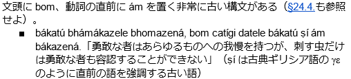
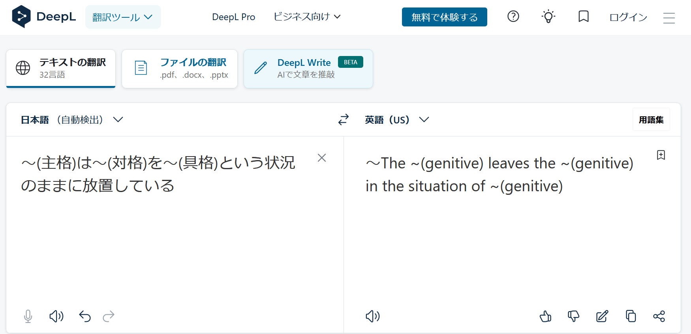

とりとめなく造語をしていったpart2とは異なり、part1と同様、お題を決めてそれの翻訳をメインにやっていこう。
今回のお題は「空が燃える理由」と「国際共産主義活動よ、連合せよ」である。リパライン語の勉強が捗りそうである。
実はまともに読んだことが無いのである。今から読もう。
…直前の「リナエストの指折り」の方がバート人好きそうじゃない？こっちにしよう。心変わりが無限に早いのがj.vのj.vたる所以なのだから（は？）
ban mi-ss-en tonir l'-es birle-en alefis io /
? 私-PL-ADJ 神 LEX-である 恵み-ADJ アレフィス 〜において /
我々の神、恵みのアレフィスにおいて
linaest-e-'d lena-∅ estj sniejus-on lkurf. /
リナエスト-EPE-GEN 学者-NOM 聖なる-J 集合する-ADV 話す /
リナエスト人の聖学者が集まって話し合っている。
"mi-ss-eu-∅ kin-on kinfit m-elx cene niv kinfit / loler mors-∅
私-PL-∅-NOM 指で示す-ADV 数える そして-ELX できる 〜ない 数える / 多い 物-ACC
「我々は指折りで数えると多くのものが数えられないが、
p-elx mi-ss-eu-∅ gentuan tuan-o-∅ jol de." /
しかし-ELX 私-PL-∅-NOM 忘れる 記憶する-NMLZ-ACC だろう (位相.M) /
(だからといって、数を覚えた)記憶は忘れる」
"lys, farfel-el leus kinfit melx jol is la_lex-∅. /
確かに 普通-の仕方 〜を使って 数える そして-ELX だろう なる LALEX-DAT /
「然り、普通の方法ではそのようになるでしょう。
pa, liexyt-i-'s lex kin dieniep-'i furnkie m-elx, /
しかし 指-EPE-NOM LEX 指で示す 数値-ACC 変える そして-ELX /
しかし、指で表す数字を変えれば、
cene dirs jol kinfit de lu vatimel-j" /
できる (位相.M) だろう 数える (位相.M) (位相.丁寧) 更に-J /
更に多くの数が数えられます。」
lena-stan-∅ senost-on lkurf ny_la_lex-∅ liaxa. /
学者-定性-NOM 聴く-ADV 話す NLL-ACC PRF /
それを聞いて学者は次のように言った。
"mi-ss-∅ vaxelf denep-e-'d dieniep-e-'c qa-tva-'i m-elx, /
私-PL-NOM 追加する 桁-EPE-GEN 数-EPE-DAT 二-倍-ACC そして-ELX /
「桁の数のそれぞれに二を掛けていけば
cene kinfit an-dqa_pan-∅ selsta ledyd leus." /
できる 数える 十倍-三_一(=31)-ACC 片方の 手 〜を使って /
片手で三十一を数えられる。」
et-'d lena-∅ senoston lkurf ny_la_lex-∅ liaxa. /
他-GEN 学者-NOM 聴く-ADV 話す NLL-ACC PRF /
他の学者が聞いて次のように言った。
"pan-'d liext leus kin an-pan m-elx jol kinfit le loler-rg-erl." /
一-GEN 指 〜を使って 指し示す 十倍-一 そして-ELX だろう 数える (比較級) 多い-EPE-〜する物 /
「一つの指で十通り表せればより多くのものを数えられるだろう。」
si-ss m'-anfi'erlen, es_pesten_fal kinfit-el. /
彼-PL そして-頑張る 習得する 数える-〜のやり方 /
彼ら(学者たち)は努力して、(その)数え方を習得した。 /
liaxa lena-stan-ss-∅ lazzija xalnem-∅ lyme. /
PRF 学者-定性-PL-NOM 発明する すごい物-ACC 〜だと思う /
学者たちは素晴らしいものを発明したと思い、
mal, deliu kvitlearna lyme edixa. /
そして せねばならない 啓蒙する 〜だと思う PRF.PST /
これを(人々に)啓蒙しなければならないと思った。
mag si-ss-∅ m'eski fi'anx-∅, marl-a-'l xel fua kanti-o. /
ゆえに 彼-PL-NOM そして-外にいる 礼拝堂-DAT 街-EPE-終着 向かう のために→ 教える-NMLZ /
このために、彼らは会堂を出て、街へと向かった。
pa, marl-er-ss-∅ niv tuan fai snietij-e-ce-nasch-el. /
しかし 街-〜者-PL-NOM しない→ 記憶する のために→ 困難な-EPE-〜が過ぎる-〜性質を持った-〜のやり方 /
しかし、町民たちはその度が過ぎた難しい数え方を覚えることはなかった。
ny vilarti-ust-'i es mole niv fua la-syk. /
(対義化) 慣れる-動作-ACC 行う すべき 〜しない のために→ NMLZ-たやすくできる /
簡単にするために慣れない方法をするべきでない。
la_lex-∅ veles la sties "linaest-∅ kinfit-el".
LALEX-NOM 〜される NMLZ 呼ぶ（=呼ばれる） 「リナエスト-NOM 数える-〜のやり方」
これを「リナエストの指折り」という。
まあこんなもんか。
うむ、作者による日本語訳以上の情報が特に得られたりはしなかったのである。まあリパライン語のいい練習になったので良しとしよう。
あ、banについては「『ただし』だけど、それは定型句だからあまり意味無いぞ」と言われたし訳出しなくてよさそう。
スキュの詩の形式というのは、↓
○○○○○○○○○○○○ ○○○○○○○○○○○○ ●○○○○○●○○○○○
または
○○○○○○○○○○○○ ○○○○○○○○○○○○ ○○○○○●○○○○○●
のような音節構造であって、●のところの母音が一致する、という形式だそうだ。なかなか緩い形式だ
（TWTにて、2018年6月10日）


ということで、追記＆英訳に反映。
coin2.htmlの13を回収していなかった。
曲用の説明 人々は立つ その男性は花を摘む。 彼らは試合中にお茶を飲んでいる。 （任意のバートっぽい人名）は（任意のバートっぽい人名）に花をあげる。 関係代名詞の説明 私は、私が読んでいる本を兄弟に与えた。 レシェールはバート語が話されている地域に行きたい。 私が優しいと思っている彼は犬を殺した。
| 既にある | まだない | ||||||||||||||||||||||||||||||||||||||||||||||||||||||||
|
|
あと、レシェールはlexerlなのでlexeḷになるなぁ。
しかし、bhátán zephaとbhátúḷが同根で微妙に紛らわしいので、ユーゴック語にでもしようかなぁ。じゃあ花のやり取りの方にlexeḷを回して、カラムディアに行きたいṣabhahumくんを導入しよう。
「ユーゴック語」はリパ経由ならyrgokk → yúgok…んー、júgokかなぁ。júgokán zepha.
このうち、「人々」はásúkazá（いやまあこれ「人々」じゃなくて「複数の人」だけど）、「男」はkí、「AはBがCだと判断する・AはBをCとみなす」はṣíyáúḷなので、残るは
| 立つ | 牌lo |
| 茶 | tisia.ar, tia2 |
| 食べる・飲む | iam1にはならない気がするんだよなぁ |
| 与える・あげる・授ける | 牌tui2でいい気もするが、まあどうだろう。タカンも参考に決めよう。 |
| 〜されている | んー、どうなんだろうなぁ、guk2ではないとは思うが |
| 優しい | ガチャ→非アイル。うーん。 |
| AはBがCだと判断する・AはBをCとみなす | ká dízá báṣi kit úrajúḷ ema heyázená hem. という例文もあるのでheyáúḷも使えるが、「裁」系統で一つ造語したい。 |
| 犬 | ガチャ→非アイル。むー。 |
| 殺す | ガチャ→非アイル。ええ… |
で、例文は
受け身は暗黙主語で処理。いや実装すべきだけど。
牌tui2はアイルtui「してあげる」だしなぁ。別にそれでもいいんだけど。んー dujúḷ? ḍijúḷ?んーー
藍takina「与える」で作りますかね。dákínúḷですな。「〜(対格)を〜(ghi)に与える」。
早く例文書いちゃいたいし、動詞とかを変えるか（怠慢）。
あ、そうそう、ásúkazáは「人々」ではないという話が出たので辞書にそう書いておいたんだった。というのも、
pai² am zie¹ cet² kaik. ka¹ kak tin¹ zep¹ hue¹, ua pai² ty nua² cue¹ ge a zep¹ tet.
— 机戦/cerke/パイグ将棋/cet2kaik (@cet2kaik) 2018年6月23日
ここで私はcue¹ ge「或等」と書いているが、SYはこれを想定していなかったらしい。cuk²「人」を避ける理由はバート語にあるのではないか、ということでそういう仕様になった。
ずいぶん放置したので、とりあえず久々の造語をやりましょうか。
直前の
| 立つ | 牌lo |
| 茶 | tisia.ar, tia2 |
| 食べる・飲む | iam1にはならない気がするんだよなぁ |
| 与える・あげる・授ける | 牌tui2でいい気もするが、まあどうだろう。タカンも参考に決めよう。 |
| 〜されている | んー、どうなんだろうなぁ、guk2ではないとは思うが |
| 優しい | ガチャ→非アイル。うーん。 |
| AはBがCだと判断する・AはBをCとみなす | ká dízá báṣi kit úrajúḷ ema heyázená hem. という例文もあるのでheyáúḷも使えるが、「裁」系統で一つ造語したい。 |
| 犬 | ガチャ→非アイル。むー。 |
| 殺す | ガチャ→非アイル。ええ… |
に加え、「『青』を訳さないとISDEが訳せないのよな。」ということも知られているのでやっていくか。
ちゃんとログを書いているおかげで造語プロセスが容易に再現できるのが嬉しいところである。まずは「優しい」からやっていくか。
こういう語は語義の変化が激しいので、とりあえず乱数で作ってから近そうな語を同根判定することになる。さてダイス。
z[83/154]→á[101/308]→m[18/353]、zámúḷか、よさそう。
アイルchame「たのもしい；ゆるい」がある。うむこれっぽそう。
別語根が定着しているというパターン面白いですよね。別語根にします。
∅[4/154]→au[300/308]→h[157/353]→á[110/308]、うーん違和感。やり直し。
h[57/154]→u[278/308]→d[219/353]→á[119/308]、やり直し。
c[105/154]→e[233/308]→ṣl[282/353]→じゃあoか。
よしこれにしよう。もちろん単複同形。
同根語見つからないしof uncertain originですな。
「帰ってきたヒトラー」とか「ヒトラー 〜最期の12日間〜」とかを見ていたら、「正義という美味い酒を飲みすぎるなかれ」とかいう表現を思いついたので訳そうかな。
khak「父」はあるのに。祖語*manmanqがbanáman「親、両親」になっちゃったから空白なのよな。
えーと牌pui1、藍pwojei。えーとbhá-…いや、bhaiの可能性があるな。あとそもそも語中判定かもしれない。んーでも語中判定じゃなさそう。lásibhaihomá、ríkabhaihomá、…lom-i-bhaihomáだよな、さて正書法ではどう書くんだろう。
えーはいこれ添詞ですね。名詞が無格なんだから。だからlási bhaihomá、ríka bhaihomá、lomi bhaihomáです
「冠光」でhá aṭam_kádであってhá aṭam_kádaiでないのは、ṣomaúḷが具格ではなく対格を取る方言への配慮、ということにした。
アイルcahu「せきとめる」とcwaho「つかまえる・とらえる・逮捕する」が合流したcahúḷという動詞がありそう。立てた。
一切のきっかけなく唐突に「交換する」っていう動詞が欲しくなった。立てよう。
「二つの位置を交換する」と「古いものを取り除いて新しいもので置き換える」は別動詞な気がする。
前者はアイルbohai、後者はアイルhoteiとなった。えーbhoheúḷと…乱択でゼロ声母。otajúḷ…んーotúḷかな。
これまた唐突に欲しくなった。アイルngaiweo「鋳上げる、鋳造する」だな。gh-...えーkáṇaisaとかあるしghai...んーgháyoúḷかなぁ。
パイグzip1「失う」、アイルziphei「失う」。バートだと「忘れる」なのではと思われる。
『牌 hia1 + 牌 aik2 + 牌 a。パイグ語 aik2 と異なり、バート語kádには「光」の他にもkádúḷ「目立つ」の名詞化として「視線・注目」という意味がある。また、バート語では、「属格 + k」の主格が単体の属格で現れるため、属格接辞が結果として単立できるが、パイグ語ではこれは不可能であり、この位置のaは感嘆詞として解釈される。よってパイグ語 hia1 aik2 a. は「光りたいです。」という意味にしかならない、言うなれば「伐製牌語」である。hi- が x- で借用されているのは、ワート弁の影響である。』
「パイグ人」ではなさそう。属格専用名詞「パイグの」だな。
nautuの方言音にnauṭuがあるんですよね。書いとこう
フィラー。á や há の他には、ea [e̞ːə] とか aḍí [əɖɨː] とかになるんかなぁ。
だいぶ前に考えてたけど辞書に載せていなかった。バート人サイドはelmen'iarsの比較的忠実な音写だと思ってるのだが、Fafs「リパラオネ人、elmen'iarsの借用形だと気づかなさそう。」とのことである。借用あるあるだ。（明るいlは音節末に立てないためシュワーが入るのが特徴的）
格絡みの単語が欲しくなったので、乱択をしたら（複数回の却下を経て）náhozというのが浮かび上がってきた。
さてさて、アイルnahoは「加える,足し算する」だそうだ。なるほどなるほど。主格に「付け加える」行為を指すわけか。バート語の格変化は基本的に語尾しか付かないから適切だな。
しかし、なぜnáhazではないのだろう。
…náhazが「足し算」なのかなぁ。náhozは二重語かなんか。ありそう。
えーnáhúḷ「〜(対格)を〜(ghi)に付け加える」、náhaz「足し算、追加すること、付け加えること、付加」、nához「格変化させること」、náhozúḷ「〜(対格)を〜(具格)の形に格変化させる」か。
「光って跳ねる」ということで、伐kád- + 伐kánagh- で kádakáná となる。
パイグにbe1がありアイツォにnau1があるが、バートには両方あることになった。
これが「なった」のはかなり昔の話なのだが、やっとなった。
こういう「割合名詞」を依存名詞のサブグループに立てたい。
あ、同様に、「2つの目」ríkahomá adha に対して「両目」を表す「目の両方」みたいな割合名詞もありそう。
ṣahe、口語で縮約してṣeかなぁ。アイルcah^iu「二つに分かれる」・sahu「双数」・sahua「二項式」とかと関係があるのだろうか。
んー、アイルで全部uなのと、バートでe終わりの固有の名詞がnautuhomá eしか無いのが気になるな。でもまあ、eはアイルreaeだし、「語末eはなんか変な経路でのみ供給されるので少ない」というのもありうるな。
えー単数形である理由がないので、adhaomá ṣahe「両目」。
品詞名、どうしよう。「抽象的形式名詞」に合わせて「○○的形式名詞」とすべきかな。
j.v 2019/08/23 07:16: センス求む：「～の全て」「～の一部」「～の両方」みたいなのを呼ぶ名称（「○○的形式名詞」みたいなのを想定している）
kpht 2019/08/23 09:56: 選択？
j.v 2019/08/23 15:26: なるほど
kpht 2019/08/23 18:37: 全部も一部もまあ選択かなーって。
j.v 2019/08/23 18:38: 採用かな～
kpht 2019/08/23 18:43: 唯一の案が採用される案件だ。
j.v 2019/08/23 18:44: ここに書いてない私の案が2つぐらいあるがしっくりいっていなかった
kpht 2019/08/23 23:11: こんな合理性重視の命名でよかったかなとは思うけど、まあいいか。
j.v 2019/08/23 23:12: 日本語名なので
「選択的」だと日本語として意味用法がズレそうなので、「選択性形式名詞」にするか。
アイルsitusuが燐字採用されたので、sítである。
「基本色」だったり"basic color terms"だったりという表現は色んな人が色んな用法で使っていて面倒なので、ここでは
としておく。同一の等の中で文法的能力に差がある場合は上級・中級・下級などとする。現代日本語にこの定義を当てはめるなら、「赤」「青」「白」「黒」が一等の上級（「青々と」「赤々と」「白々と」「黒々と」などを持つため）、「黄色」「茶色」が一等の下級であり、「灰色」「オレンジ」「緑」「紫」「ピンク」辺りが二等、「山吹色」「若草色」辺りが三等。英語…への適用は向いてなさそうだが、まあredやらpinkやらが一かつ二等、となるのか？
それはさておき。とりあえず「白」「黒」「黄」はバート語では一等色になりますね。
| 状態動詞 | 名詞属格 | |
| 白 | bházahúḷ | bházau(homá) |
| 黒 | úroúḷ | úro(homá) |
| 黄 | kúcujúḷ | kujacú(homá), kúcú(homá) |
ちなみに「黄」は藍 khaicwi（灰黄色）、kasui (硫黄)との関連が見て取れる。あとuj は バートでは ú に行くことも反映されている。*[kʷəj-sʷəj]みたいな祖形なんだろうか。
一方で「ピンク」はnumíju(homá)しか持たない二等色。
基本的にこれらの色彩体言は属格として体言を修飾する用法しかない。「この時計はピンクです。」は「この時計はピンク色の物体である。」なので kom zíghíṣ numíjuhomá k hem. となる。色そのものについて言及する文、例えば「黄色は白に似ている。」は bhog「色」を修飾した形で用いるので、kúcúhomá bhog bházauhomá bhogi [bʱo̞ːɣi] hína cajakátá. とするのを規範的とする。
あっ bhog + -i は bhogi と綴って [bʱo̞ːɣi] と読むのが普通です。ghが [ɡʱ] であって [ɣ] を持たない話者なら [bʱo̞ːɡi] だけど。
ámみたいなやつ。
áphíyo (マーク, ロゴ, シンボル) < 理afi'orj, bákatú (勇敢な者), bákatúḷ (勇ましい) を足す。 bákat- ~ 藍makutu (勇ましい) は bák- ~ 藍maqui(抵抗する) との関連がありそうだとされている。
バート語創作の最初期からある単語であるákíjamán dhoḷopáná ṣibhaiomá dhárad、なんと辞書に載っていなかったので載せた。えー長いので略称があるべきで、まあ頭韻を踏めるdhoḷopáná dháradかなぁ。
SY「実際共和国って意識そんなにつよくなさそうだしなぁ」
あとは「PMCF」を……lipakoḷは無気音で転写してるし、fの転写はリパライン語から来たときはpediaから見るに無気になるっぽい（phúpenはヴェフィス由来、wephiseはリパライン語由来だけどヴェフィスの影響もあるんでしょ。パイグはphaigaなので有気。）ということでpemecepeだな
2019年1月2日にSYから「アイル首都 天神(藍:makati 東:makati 理:makati / 牌:makati, syt2 tun2 皇:makati,sjuxtun 闇:makati?) バートどうなんだろうなあ」と訊かれた。それに「ふむふむ。まあmakatiかなぁ（どこかの母音が長い可能性はある）。makatiです」と答えている。辞書に載せよう。
は母音が付随しないことを表す記号よな。
そうそう。名前はアウマカーター・ロード (aumakátá rod)( ) 。「傾いた短いやつ」の義。
という記載をしておきながら、これ以外のところに特にこれをちゃんと記録していない。書かねば。
とりあえずcoin3の責務としては、「傾く」という単語を登録しておくことが挙げられるわけだ。ああ、このページの先頭で
と言ったのはなんであったというのか。
とりあえず状態動詞「傾いている」aumúḷがあるのはいいとして、もう一つ ammúḷ「降りる、下降する」がありそう（vernacularに継承した単語は -wm- > -mm が起こっている、みたいなのはおもろいので）。amúḷ「勝っている」も存在するので文法の例示に便利だ。
こういう、「vernacularに継承した単語は -wm- > -mm が起こっている」みたいな話を導入するなら、当然 mot savant の概念が必要になる。
Un mot savant est un néologisme ou un mot dont l’évolution étymologique a été freinée par le contexte socio-historique et qui reste de ce fait plus proche de son étymon. Par exemple, « fragile » est un mot savant dont le correspondant populaire est « frêle ». Plus généralement, la langue savante (marquée de formations savantes) est la langue scientifique issue du latin ou du grec, opposée à la langue populaire ou vulgaire.
― Contenu soumis à la licence CC-BY-SA. Source : Article Mot savant de Wikipédia en français (auteurs)
学識ある人によって人工的な作為で作られたり取り入れられたりした単語は、英語では learned word、フランス語では mot savant、イタリア語では voce dotta、スペイン語では cultismo とか palabra culta と呼ばれて区別される。
― ロマンスという言語―フランス語は、スペイン語は、イタリア語は、いかに生まれたか― 小林標 p. 138
taku とかそうだし、あとまだ辞書に載せていない kaikúḷ とかもそう。
アイルmatutuが（いせにほソースで）真理設定辞書にあるので採用。まあ makutu が bákatúḷ なので、bátat とかでしょうな。「Aの外」などは基準具格になるのもそれはそう。
「外の単語」。さて、nautuはもともとnyautuなので、これとnautuが複合語を成す際にはṇになる。さらにその後ろのtもそり舌化する（口語形nauṭuはここからの逆成なのだなぁ）。問題は、bátatṇauṭuと綴るべきかbátaṭṇauṭuと綴るべきかである。
うーん、語源ベースでtで綴るか。あっそういやbhátnímaṣ辞書に載せとらんかったね。まあ発音の問題があったからなんですけど。
「ラネーメ形態素からなる単語」みたいなのをふわっと表す líṇaṇauṭu。まあ要するに ↓。

これはもう辞書に形態素 -ṇauṭu を載せてよさそう。「nautuの左接被覆形」という形で載せるかな。
ついでに líṇa- も載せてしまおう
パイグ語sy2、アイル語asiuと同根なのは「～(対格)へ石を投げる」という動作動詞であって、「石」はアイルhewe（cf. リパライン語hervianni「石炭」）の方の形態素を取ることにした。
*fue-fueのような形の畳語かなーということで、eeか？語中にゼロ声母のeとか前例がないけど。 というかバート語かなりhiatusを嫌う（母音幹 + 不定詞語尾、母音幹 + -om(á)、間投詞ea、明らかな借用語(elameniác, juecleone, pedia, xízía)）のだがどうなるん。
というか実際に*fue-fueのような形が時間発展したらどうなるの。w-はai, o, áの前でしか確認されてないし、そもそも語中の *f の挙動についてなんもわからん。
[e̞ːje̞ː] となったりするのか？ほんまか？hiatus回避のために頻繁に挿入されるのは -gh- (cf. xághaika, ghitto (これは語頭i回避)) なので…ああ普通にeghiか。
eghiですねeghi。他に無いでしょ。「語末eはなんか変な経路でのみ供給されるので少ない」であったのだし。
あ、そうそう、語頭のゼロ声母のeはjが挿入されるという話…はもう文法書に書いてあった。よしよし。
載せた。
2019年8月〜9月前半あたりにはすでに着想されていたはず。副詞 bháṣ と bhaṣ で文末の動詞以外を挟む形で行うこととする。具体的には
といった形となる。
基本的に dháradúḷ なのだが、「共に移動するために一旦何らかの場所で集まる」という意味の際はcákíkúḷを用いるということにして互換性確保。
9月14日には既に考えてあったが、「なんかちょっとかっこいい感じのケース」という暫定的訳語をどうしようか迷って放置していた。載せた。英語版での説明にも困ったが、とりあえず "a cool but possibly pretentious way of saying 'a box'." ってしておいた。
バート語の定型詩（近日公開予定）の話をする際に、そういや「歌う」が欲しいなとなったので立てた。ṣahúḷである。bhoṣahúḷ「起き上がる, 立ち上がる」を絶対に燐字で
 （満歌）と書いてほしいという気持ちがある。
（満歌）と書いてほしいという気持ちがある。
藍falaaで牌huat1なのでwoghitの仲間であってwáḷaになりそう。足した。
2018年5月26日に既に設定していたのに辞書に載っていない。載せた。一年半前にlin-marnに載せたしこっちにも載ってると思うじゃん。
ユエスレオネ成立直後あたりのバート人人名を提供してほしいと言われたので、人名záwaim, rúkasam, ághim, íditaim と、名詞rúkasa「年老いた女性」・ághi「血」、人名生成接尾辞-itaimを立てた。
ehai-∅ lásij-akátá cekhaihomá aghauṭa
王冠(=アイル共和国)-NOM 統一-3N.PST.PTCP セットカイク-GEN 本
アイル共和国が統一したセットカイクの本
cekhai-∅ ?
セットカイク-NOM ?
セットカイクとは？
cekhai-∅ phaiga nímaṣ-án sáp-akátá núdha-∅ ∅.
セットカイク-NOM パイグの 民族-GEN 古い-3N.PST.PTCP 遊び-∅ [〜である]
セットカイクは、パイグ民族の古い遊びである。
ríka-homá ásúka-∅ ko-dhel z-acai.
二-GEN 人-NOM これ-ACC する-3.REAL.POLITE
二人の人がこれをします。
cekhai-ḍi hína ásúka-zá tcuwo-dhel boh-azá-cai ja dhárad-ele janá-úḷ-∅ ema rij-acainá.
セットカイク-POST 〜に 人-NOM.PL ツウォ-ACC 行く-CAUS-3.REAL.POLITE そして 連合-ACC 作る-INF-POST 〜を 望む-3.PST.PTCP.POLITE
セットカイクにおいては、人はツウォを行かせまして、連合を作ることを望みます。
lási-∅ tcuwo-dhel boh-azá-cai ja ám bháp-akátá lási-∅ tcuwo-dhel boh-azá-cai.
一人の人-NOM ツウォ-ACC 行く-CAUS-3.REAL.POLITE そして 〜でない 〜である-3N.PST.PTCP 一人の人-NOM ツウォ-ACC 行く-CAUS-3.REAL.POLITE
一人がツウォを行かせまして、(その人)でない一人(=もうひとり)の人がツウォを行かせます。
bohú-zá wáḷa dác-akátá.
移動-NOM.PL 互いに互いを 後続している-3N.PST.PTCP
移動は互いに互いを後続する。
bhom-azená núdhabágha-∅ am-akátá ásúka-∅ am-acai.
持っている-3F.PST.PTCP 点数(遊戯+数)-NOM 勝っている-3N.PST.PTCP 人-NOM 勝つ-3.REAL.POLITE
持っている点数が勝っている人が勝利します。
tcuwo, ko-∅ boh-áká ghikísa-∅ hem.
ツウォ これ-NOM 行く-ADV 木の小片-NOM 〜である
ツウォ、これは移動して、木の小片である。
dhárad, ko-∅ núdhabágha-dhel bhom-áká tcuwohome dhárad-∅ hem.
連合 これ-NOM 点数-ACC 持つ-ADV ツウォ-GEN.PL 連合-NOM 〜である
連合、これは点数を持っていて、ツウォたちの連合である。
bhomazená núdhabágha amakátá ásúka amácai. においては、点数を持っているのは双方であるので男女混合の-zená、勝っているのは片方であるので性別不定であって-kátáである。
「古い」はsia1系統ではなくsápúḷを立てる。「古い, 昔からのものである, 伝統的である」なので、「年老いた」方面がsia1系統である可能性はある。
「遊び」もtu2系統でなくnúdha「遊戯」を取る。遊戯を遊ぶ場合はそれの動詞化だが、-ḷor動詞のように-orで語幹拡張された形となった。「点数」はまあ「遊戯の数」よね。
「〜の後ろにいる」dácúḷを立てる。「後ろ」dáṣが立つ気がしてきたので立てとこう。
「木の小片」とかいうだいぶ狭い意味の単語が、アイル語ikisa「積み木」の借用として立った。ghittoでもおなじみghi-借用である。
まああとはlásiの動詞化lásijúḷ、cet2 kaikの借用cekhai。
2020年1月6日に登場。音素配列論的に/paːi̯/が許されないのでこうなる。
38.で立てたので。
藍xoudo「重い」, 牌xo2「重い、重要な」から「多くの」を導出。
上で使ったので辞書に載せた。
2019年6月15日ぐらいからほしいとされていたのに成っていなかった。
アイル語masuni「塗る」、macwe「（燃料を加えて）火を燃やし続ける」を元に液体油。
bacú「液体の植物油」、bácujúḷ「油を注ぐ・油を塗る」だな。
ṣásubhozúḷとなった。同根語なんなんだろう。音節数的に複合動詞っぽいけどなにから構成されるのか？
asíjaúḷです。
スキュリオーティエ・バート語の ka-jə-tu-wa-ñu-vi-ja-ə-ma-a-mə-nə-nu-wəj-su-te-e-le-e-ju-wa-ja-mə-ə-tə [ᵑga.jə.twa.ɲuː.βi.ja.ə.maː.mən.nwəj.zu.dʱeː.le.e.jʷa.ja.mʷəʔ.tə] の現代語訳の一部に出てきたjúpheja amáma núsudhel eyáúḷから未登録語を回収。
スキュリオーティエ・バート語の-a-mʷəʔ-に対応する形。『聞き手にとって既知であることを期待する形』『日本語の「～と思わんかね？」のような感じで文法化している。文法化しており主語が明確なので ema を落としてよいし、普通は落として使う。口語ではまるで [aːmbʱaːʔmuː]という終助詞であるかのように使われるのだろう。正書法上はどう書かれるんだろう。』とか書いてある。
リパライン語falveltaがなぜかfaltveltaになり、それが入るとpautawauta。かわいい。
skurlavenija.mavijaに要求され2020年2月16日に『blohai「独裁、絶対的権力」からバート「法」を導く』案がまとまる。2020年3月8日に再び提起されたことにより造語される。
藍blohaiからはbhoḷog「法」, bhoḷorúḷ「法を定める」（こいつは類推による-ḷor語幹化を喰らった）という派生が生える一方で、藍bohaiと衝突することを考えるとbhoheúḷの形がなるはずである。ということで受動専用動詞bhoheáḷ「法により制限されている」が生えるのである。
-ḷor語幹、文法書にしっかり載せなきゃね
という単語があるはずだという気持ちになったので考える。
藍sulou「ミント」ということで、スチェスナスト、アラザキーフィナツ、ラバスフィナ、フィナツ、フィノストリヴァスンなど一般的に強い芳香を持つ草やその実を指せる単語。それの動詞化なので、「〜(具格)の強い香りで〜(対格)の不快なにおいを隠す」と「〜(対格)の葬儀をする」。名詞はsúḷaだな。
2019年6月16日に『kaik系統は「争う」（人と人が対立し、どちらも自らが優位に立とうと互いと戦う）であって、cet2kaikには使えるが「苦痛や障害を乗りきろうとする。打ち勝とうと努力する」の用法はない。』というメモが残されており、それの解釈として2020年3月4日に『上記の「kaik系統」ってバート語が継承した単語であり、「苦痛や障害を乗りきろうとする。打ち勝とうと努力する」の用法で使っているkaikúḷは要するにアイルかパイグからの借用。』とした。というのも、2019年6月16日以降（具体的には2019年9月）にkaikúḷを「苦痛や障害を乗りきろうとする。打ち勝とうと努力する」の用法で使ったからである。
j.v.氏のバート語訳『勇気のしるし』よかった
— まい/まいさん/MIT@言語垢 (@mai_lang0) 2019年9月14日
kaikúḷに関しては（特に継承であるか借用であるかとかで）まだ考えが固まっていなかったし、ネットの海にも放流していなかったので後回しにしていたが、
『リゲインのテーマ』1番 バート語訳(検索用)
— まい/まいさん/MIT@言語垢 (@mai_lang0) February 27, 2020
kujacú jo úroom bákatúom áphíyo t.
ákíjamán nauḍína kaikúḷ ácahamúná?
lighein, lighein, bhámahomá lighein.
bákatúom áphíyo hemakátá táphíyot.
bháhepaom nauḍína kaikúḷ ácahamúná?
elameniác, elameniác, jápáeoom elameniác.
skurlavenija.mavija氏によりネットの海に放出されてしまったし、まあnヶ月心変わりが無かったのでよさそうともなったので、正式にコーパスに載せることとした。
ああそうなるとjápáeoを非真理設定として載せねばならない。
さて、2020年3月4日解釈によると『バート語が祖先から継承したkaik相当は「争う」（人と人が対立し、どちらも自らが優位に立とうと互いと戦う）』の義だそうだ。aik2がekであることを考えると[k]e[k]辺りになりそうだが、御存知の通りkeは忌避である。ということでkágh-辺りなのだが、ここで-ḷorでない-lorの例として考えていたnaunilorúḷ (藍nyaunei「力強い」 + 藍dili「刺す」と解釈)から接頭辞nauN-を取ってきて、kágh-にくっつけてnauṇághúḷである。と思ったら辞書を書いている最中にnauṇaghúḷと複数回打っていたので（cf. 何度もfaltveltaと入力していたことから成ったpautawauta）、nauṇaghúḷになりました。多分これ一般性あっていつか定式化できるようになるんじゃないかな。
なんか生えた。藍cacheは「発掘する」なのだけど、そこに石をくっつけて「彫刻する」【「掘る」と「彫る」は日本語のみならずアラビア語でも通ずる（حفر）】、そのままだと「深くする；関係を深める」。
さてcazúḷということは短動詞なんですが、えーはいzúḷに従うものとします。
investigate.htmlの93. 名前で「スキュのバート語訳をした人の名を作りたい」「訳者が2人欲しくなったので2人分作る」と言われたのが2018年10月16日。そこから1年5ヶ月が経った。やっと作る。
naunilorúḷの語幹である（単独では息をしていない）dil-からdílitaim、いやdílitamにしよう。もう片方は鳥。ああ鳥やんなきゃね。
もうひとりの方は、えーkoとrúṣ。korúṣam自体はkoとrúṣで書かれるけど実際はkoとrúṣじゃないってやつだ。もう片方えー「広くなる」。
そういやephaúḷ「倒れる」が生えていたな。アイルaipaに「落下する」もあるので、「崩れ落ちる」「位置が下がる」「低くなる」「滴り落ちる」ぐらいの意味用法までは入りそうだな。ものやその重心が低い位置に移動していく動作の動詞というわけだ。
xízía.の省略としてzí.がありそう、ということになった。ピッチ下降の位置が保たれているのがポイントである。
バート語においてnána ... hemという表現は非常に不自然だが、リパライン語同格表現l'esの翻訳として翻訳調では多用される、ということになった。おもろい。
また、2020年4月2日に「xel『向かう』に由来した翻訳的語法」という案が発生。
aḍuhazoúḷ「～（ghi）へ直線的に向かう（翻訳調）」を立てることになるが、別語として立てよう。
jekto.vatimelijuの自己紹介用の文章を前に作ったのと、そのときに「不思議の国のアリス」のタイトルを翻訳したことを思い出したので、載せた。
2019年9月19日に、
*slqna > ṣə̃ ~ ṣən が色々荒らしてくれる。主格ṣán, 無格ṣáni, 対格ṣánel ~ ṣánele, 属格ṣán, 具格ṣánai, 後置格ṣáni かな。
6、ṣ- + lási で ṣási > /ʂaːʐi/ > ṣári か？ 7はṣ- + ríka で ṣíka, -ːríka。 8は ṣə̃ + lom で ṣánom。
話者の意識としては、6が5+1であることは見えづらいので、1, 2, 3, 4, 5, 6, 5+1, 5+2, 5+3 となっているのだなぁ。ところで 4 ってどう言うんですかね。
6 については牌net2由来のnátも状況においては使われているかもしれない。
と書いた。ṣári、「まーーいけるでしょ」とは思うがちょっと不安なので一瞬保留するか。ṣániと紛らわしそう。
あ、ṣáriの方が後置格の類推喰らってṣáriḍi jo なのでは？ありうる。
ṣánomの属格はṣánŏmánかもしれない。だな。複合語だと-ṣanománもありうる。ああ長母音が複合語の前要素の最後に来た時には四連禁で規則的にこうなるのだななるほど。
まあnátは単独の数詞では使わなくていいかな。「六」を含む複合語ってどんなんがあるんだろう。そういや「すごろく」がそうだな。
とりあえずṣíkaとṣánomには一切不満が私の中で出ていないのですぐ載せようと思う。「七」でṣíkahúḷを表す用法とかありそう。「六ヶ敷」だ。
そういやアイルniku（cf. エッツィア）, misa（cf. エッツィア）, iki（cf. エッツィア）, naku（cf. エッツィア、タカン）の系統って使わないんだろうか。タカンと同様9だけこの系統なのかも。
即決するなと心が言っているので即決しない。えー藍n-だからn-、まあná-、あーそういやfokuはwoghitか。
nágh(a|もしかしてi？)(ṣ|t|なんか|ゼロ)か？それともnágか？んー。どっちもあったりする？ほんま？
どっちかが属格専用とかだったりするのか？ほんまか？
保留。というか普通に5+4系統な気もするので（過去ログにはその旨ある）4を考えてからでないと結論は出せない。
5の曲用、ヤバいですよね。どれに対しても違和感を抱かないのがすごいんですが。
まあ要するに、「ṣə̃ ~ ṣən が色々荒らしてくれる。」ということであって、歴史的には「鼻母音幹」みたいな振る舞いをしていたわけですわな。
さて、バートの人名って鼻音終わりであって、かつ斜格への曲用の例がない。
…あれ？辞書には-(a)mの語源が-anlと書いてあるが、文法書には
ってあって、-(a)mの語源って載っていない。祖語辞書にすら-(a)mの語源は載っていない。単に旧文法書に+(a)n/m(<*anl)という記載があるのみである。
-itaim ~ -itamの例も考えるに、-aimの弱形と-anの両方の影響を受けて成立していてどちらか片方のみに由来するとは言えない、ということではなかろうか。
「あれ、-om / -homá とかもあるし属格語尾って-m-も取るのでは」と思われる方もいるかもしれないが、これはbhom-由来であるという説が濃厚であるのだ。
さてさて、いずれにせよ、大事なのはどちらも由来としては連体修飾語であるという話である。結果として人名は連体修飾語としての振る舞いを残して、かつ音声的にも「鼻母音幹」みたいな振る舞いをしうる。ṣánは語幹（そもそもどこが語幹なんじゃろ）が短いのでṣán自体とは異なるかもしれないが、例えば主属同形といった特徴は持っていても全くおかしくない。でもまあ5の曲用の方が確証を持てるので、先に5を確定させる。
あとこの「鼻母音幹」、現代語としては一応「中途半端幹」(naveushousten ftlexest)みたいな名前の方がいい気がしている。まあとりあえず主属同形はdefining featureになりそうなので、「主属同形名詞」というカテゴリーで立てるのがよさそう。
……「主属同形名詞」という視点をもとによく考えると、「5」の曲用って-el / -eleが揺れることのみしか話すべきことがないな。
逆に揺れない主属同形名詞ってあるんだろうか。なんかnonとか主属同形名詞っぽさあるよね。そして揺れなそう。これだ。例文ではnonaiしか使ってないね。
ん？なんかnonelが自然な形として出てきてnoneleに違和感があるぞ。
じゃあそういうことにしよう。
ところでbániwaimありそうなので生やす。
前回は「dílitam ghátu [鳥]」と「korúṣam ghátu [広くなる]」まで決めたんだっけ。
ということで鳥をやらねば。リパライン語辞書には
という少なくとも9種の鳥の名前が確認できる。鳥そのものはketivかsiestor。
あとneydを発見。dyrul発見。jotyp発見。tenierk[tiniki.ar]発見。nalva[nalua.ar]発見。
とりあえず正規表現[鳥-鳳鳵-鹴]（要するに、基本多言語面CJK_Unified_Ideographs内での康煕字典部首「鳥」で「鳴」以外の字）でヒットするのはこれぐらいである。ということでこの上で考えていくか。
厳正なる抽選の結果、
の7種を優待することとする。
2020年4月17日の「第一回リパライン語を考える会」後の雑談で、tarf virl woltsaskaijuが「バート語でフェンテショレーってなんていうの」と訊いてきた。
タカンではmunconciccicuku（


 ）であるので、とりあえず「革命」が
）であるので、とりあえず「革命」が
 cei2 xit2由来のcajxitかな。
cei2 xit2由来のcajxitかな。
「反する」「抵抗する」とかはi2でこれはアイルが知られていなくて、まあnaunij-かなぁ、という気持ちになっているが、一方fente-ってリパライン語だと「～に耐性がある」が第一義に上がっているんだよな。それを翻訳借用してのbákúḷもありえなくはない。
しかしながらnaunij-だろうという気持ちはある。cajxitanaunij-かなぁ。燐字文化語だし「人」を逐語で言ってcajxitanaunijasukaとかなるのかもしれん。うわーバートの香りのしない単語だ。
ところで綴りがなぜcajなんですか？不思議ですね。このjによる綴りについてそもそも載せていなかったので載せた。
gaṇṇí, khaṇṇí, khaṇḍí。語頭gとか-NC-とかはかなり珍しいが、こういうタイプの単語に限って珍しい連続が出るなんて定番だし。
なお、aḍíも含め、これらの単語のaは義務的にシュワー。
厳正なる抽選の結果、
の7種を優待することとする。
あっ今nav[navou.ar]見つけた。
んでさらに抽選の結果、
| tenierk[tiniki.ar] | 固有語 |
| iavnav, nav | 多く供給してくれる言語から借用 |
| fiursiestor | 文章言語から借用 |
| tetien | 固有語 |
| dyrul | 文化的に強めだがそんなに供給してくれない言語から借用 |
| blirba[blibwau.ar] | 多く供給してくれる言語から借用 |
| nalva[nalua.ar] | 固有語 |
とすることになった。とりあえずtiniki.arはdíghiでしょう。tetienは藍taideも考えdhet, その子供がdhedighatだな。このtaideってtetienと関係ありそう。nalua.arはnál-、えーっと、まあnáḷaしかないか。
人名はnalua.ar、つまりnáḷa由来になることになった。náḷawaimですね。
よしこれで片方が決まった。「dílitam ghátu náḷawaim」。さてと「korúṣam ghátu [広くなる]」をやらんといかんですね。
とりあえず片方は dílitam ghátu náḷawaim（ディーリタム・ガートゥ・ナーラワイム）になりました。もう片方は「korúṣam ghátu [広くなる]」が予定されているんですが、「そのうちの少なくとも1人はリパラオネ圏から翻訳借用された姓になりそうです。」と上に書いてあることに気づいたので姓付きで。
— jekto.vatimeliju@hsjoihs@.sozysozbot. (@sosoBOTpi) 2020年5月9日
ということでリパラオネ圏から翻訳借用された姓も載せねばならない。
わが祖国。
後で書く。
2019年12月23日に「正しくないこと」「（理工系の）嘘」の造語提案がなされていた。した。せっかくなので「騙す意図のある嘘」も立てた。
jogの方は藍「盲目的に」と同根で、まあ何らかの見通せなさのニュアンスっぽそう。
2020年6月4日（つい3日前）に着想。ついでに「刃物を研ぐ」も。
zíṣloとなった。-ṣloって動植物周りに付きやすいよね。zíghíṣとも結びつくかもしれない。上から見るとつるの動きって時計の針の動きだし。
対応する語が知られていないことで知られていた燐字、【海】をバートbhodi、アイルpwoutwi としようかなと思った（ポートヴィータシュのポートヴィの部分）（ポート・ヴィータシュではなくポートヴィ・イタシュ）（ヘリ・コプターではなくヘリコ・プター）（キリマ・ンジャロ）
「主格」：ázá、「属格」：ánom、「対格」elesa、「具格」aibhausa、「後置格」dhíná。無格には伝統名はなく、まるで「サ未四已」のように主格と後置格にまたがるものとされていた。
「対格」「具格」につく-saはリパライン語sansであるという民間語源があるが、実際は関係ない。rúkasaにも見られるような（まあこの語においては原義の意味は漂白されていないが）、sáに由来する指小辞、に由来する「無理やり名詞化する」ときに使う辞。
6月29日辺りに
...「状況を理解する」ってcánajúḷなの？新情報が入ってきたタイプのってcánajúḷなの？ ám ghíyo hemáká cánaj bom rakkúḷ. も「塩が必要だ」はすでに知っているけど意識してなかった状態であるって話だよね？
ということでghaccúḷというのが生まれた。よって載せた。
bhodiとghíyoをくっつけると、-ighí-とか縮約しそうなのでbhodíyoです。
塩を入れる木箱を指す語がありそう。塩と水と油で器を表す単語が違います。
SY「穀物穀物」 j.v「たしかに。でも塩と同じ気がする」
ということで、塩および穀物の入る木箱。
nauke.ar「箱」から来てnaukiかな。
よしこれで片方が決まった。「dílitam ghátu náḷawaim」。さてと「korúṣam ghátu [広くなる]」をやらんといかんですね。
とりあえず片方は dílitam ghátu náḷawaim（ディーリタム・ガートゥ・ナーラワイム）になりました。もう片方は「korúṣam ghátu [広くなる]」が予定されているんですが、「そのうちの少なくとも1人はリパラオネ圏から翻訳借用された姓になりそうです。」と上に書いてあることに気づいたので姓付きで。
— jekto.vatimeliju@hsjoihs@.sozysozbot. (@sosoBOTpi) 2020年5月9日
alesの翻訳借用でいいじゃん、となった。
人名の一覧がそろそろほしくなったので建てた。
その過程で「サーム講和条約 - リパライン倉庫」に「bhoman ghátu síbham bhátnímaṣ（ボマン・ガートゥ・ジーバム・バートニーマシュ）」という知らない人名が載っていたので辞書に載せた。ところで「ボマン」ってことは短音なので例外だなぁ。
bháṭámúḷの語義を拡張して「特別」。法廷はṣíyabát。ṣíyáúḷ + -bát のくせになぜか ṣíyábát じゃなくて ṣíyabát。
2019年3月29日には「バート語の語末短化」記事に
と書いていて、それを28-1. 「借用語」でも根拠とした。そのくせこいつを辞書に載せていないという大問題があったので、載せた。
姓。姓であって外来姓でない。そう考えるとadheṣも外来姓ではない（翻訳借用なので）ので外来姓タグを外す。
skurlavenija.mavija 2020/09/10 あまりにも名前を聞き返されるので「[基本名称] gháwanúnímaṣ」が生える回 ドゥバーギョ人にはハタ名よりバート名のほうが直感的やろ jekto.vatimeliju 2020/09/10 えーgháwanúnímaṣは普通に語として採用したいとおもいます jekto.vatimeliju 2020/09/12 23:11 えーgháwanúnímaṣは普通に語として採用したいとおもいます これをやる 人「ラーヴァヌーは言語名では？」 人「しかしgháwanúnímaṣが定着しましたが………」 skurlavenija.mavija 2020/09/12 23:13 理から伐に流れ、諦めたドゥバーギョ人が使うとかそういう感じがある jekto.vatimeliju 2020/09/12 23:13 gháwanúnímaṣ、バート人にとってめっちゃ言いやすいからなあ
ここでdhezを起こしLHLLHと発音していたことに対してjekto.vatimelijuが違和感を提起。内容語と内容語が複合語をなす際、「……長短長 + 長………」という単語区切りがある場合は短はdhezを起こさない、という現象が発見された。違和感の理由としては、そもそもdhezがcepa|tepaとかríka|homáといった2+2のリズムを起源とするものだからっぽそう。なお接辞に関してはこの現象はないので、bákatúhomáとかはdhez起こしてもらって構わない。
Fafs F. Sashimi 2020/09/11 20:51 水器論は腐敗がしやすいという議論があるのでトゥワイ・ズュザ政権時の国裁判所の所長（または法務省大臣？）をバート人にしたいと言われているがどう思われる？（時勢的にも水器論が一番合うと首相一同も考えてそうやし） jekto.vatimeliju 2020/09/11 21:11 水器論を「思想」にしたのはバートというよりフェディアという説があり、全然進んでないフェディアを詰める機会にするという手もあるかもしれない Fafs F. Sashimi 2020/09/11 23:28 フェディア系、アイルに居るイメージが無かったけど実際どうなやろ jekto.vatimeliju 2020/09/12 21:04 考えた結果、バート人は腐敗を正そうと奮闘したりはしない気がしたので適任な気もしてきた Fafs F. Sashimi 2020/09/12 21:27 考察助かる。それでよければ名前を考えて欲しい（面白い名前にしたいので、名字をバートニーマシュ以外にしたいというのはある） jekto.vatimeliju 2020/09/12 21:28 となると外来姓かなぁ
思ったんだが、せっかく外来姓ならviokk由来のjokとかどうだ？jog「誤情報」と引っかけて散々風刺されている可能性がある。
とりあえずkoがヒットしたので「korúṣam」。ちなみに「korúṣam ghátu [広くなる] adheṣ」はスキュのバート語訳をした人の名だね。
次。「捕まえる」。cahúḷ。じゃあcáwataimかな。んー、cáwaṭaimだな。ということで「korúṣam ghátu cáwaṭaim jok」。
これをfafs falira sashimiに通知したところ、アイル国際特別法廷 - 悠里包括Wikiに記事が立ったので、その説明を名前辞書にも引用。
辞書にも立てた。さてそろそろ「korúṣam ghátu [広くなる] adheṣ」。
nána以外にもあるでしょ。ということで考えた。
辞書に追加するのを面倒臭がっていた。2020年10月13日にコミットしたものを辞書に載せたのが2021年1月11日。恒例の3ヶ月放置である。
同語族のパイグ語はだいたい全部 nan2 で済ませるのにバート語にこんなに多くの疑問詞語幹があっていいのか？という疑問もあったが、いざ調べてみると英語版Wikipediaには
In Jingulu, for example, the single stem nyamba may come to mean 'what,' 'where,' 'why,' or 'how' through combination with locative, dative, ablative, and instrumental case suffixes ... Other closely related languages, however, have less interrelated ways of forming wh-questions with separate lexemes for each of these wh-pronouns. This includes Wardaman, which has a collection of entirely unrelated interrogative stems: yinggiya ‘who,’ ngamanda ‘what,’ guda ‘where,’ nyangurlang ‘when,’ gun.garr-ma ‘how many/what kind.’ -- Wikipedia contributors. (2021, January 6). Interrogative word. In Wikipedia, The Free Encyclopedia. Retrieved 16:11, January 11, 2021, from https://en.wikipedia.org/w/index.php?title=Interrogative_word&oldid=998618283
とあるし全然アリっぽい。
la phertarrarsiten-curibajmorbern、長いし、バート人にとっては連邦とかで食されている「うまいけどバート料理ではない」なやつなので、pher-curという略称で呼んでそうとなった。ということで phecú を辞書に足そう。
ところでリパライン語 suluj「山椒」ってそのまま素直に借用すると súḷa で、これ「強い芳香を持つ草やその実」の総称と衝突するんですよね。面白い。さてどうなる。
ダイスには mon- と言われたが、んー bonúḷ、んー boṇúḷ だな。タカンmon「米」周りと同根かもしれなさそう。
2021年3月5日に着想。語源は牌hia1 kait、状態動詞、「～(主格)は～(対格)という値段である」「～(主格)という状況は～(対格・不定詞)を要求する」「～(主格)という状況のためには～(対格・不定詞)をしなければならない」。
あれ、対格ポジションに不定詞が来る他の動詞って不定詞+emaが原則だけど？んー、この動詞は口語的だしemaを取らずに用いるんかなぁ。
その旨は文法セクションに書いとくか。
あ、行為者ってどれで取るんだろう。どうせ具格か。具格だな。
かなり前から発案されていたはず。どれどれ、えーと具体的には2019年7月27日に
と発案されていて、それに対しSYが2020年1月19日に「波とかたしかにいかにも複数っぽそう」と言っているのか。ということでいい加減足そう。
2020年7月9日に発案されている。
辞書に載せた。
2021年4月4日に発案。久々の急速採用。
「相手に声が聞こえている保証がないので確認する」がコアミーニングかな。なお á で綴るが発音は長シュワー。
2020年1月24日に提案されている。牌tuk2で藍tukaieか。
えーと d-, do-, doghajúḷ かな。
2020年5月19日に提案。まあ牌tua1, 藍ituaかなぁ。
そういえば、「バート語は語頭i-, u- を欠くが、これは脱落か？それとも強化か？それとも両方か？」という議題が2021年2月15日に提示されていたな。藍ikisaはlearned wordであり、強化されて ghikísa として反映されている。
まあとりあえず保つ方向か？複合語にしてもいいな。-íd がありか。
あー、リパライン語ソースの藍dukhi「果実がなる」があるのか。これでいくか。 dho-, えー dhogh-, あー jog って jokhi か、じゃあ dhog.
「語形短くない？」「まあいいでしょ。」「dhoghiという説は？」「有気二連の禁。」「ghって既に帯気音の分類から外れてなかったっけ？」「たしかに」「dhoghitは？先ほどの *-íd とか woghit とかと関連付けられる」「というか woghit < *fokjut の末尾の謎の -it って itua 由来の指小辞の痕跡なのかもしれない」「なるほど？」
との一人会議により、 dhoghit かなぁ。や、dhokit でいい気がしてきた。
「しかし」は ṣiṇṇa であるわけだが、パイグ語pau1 ua「しかし」を借用した páwa もしくは pháwa（páwaの方が多い）がありそう、ということになった。
「74. gháwanúnímaṣ」でgháwanúnímaṣが定着していることを述べたが、一応ḍubájonímaṣも辞書に載せておくか。
「動作動詞」を zausáṇauṭu にしておくか。じゃあ「状態動詞」は当然 hemasáṇauṭu かな。「名詞」はリパライン語 kaft の早期借用で ghauṣ にすればいい気がしてきたぞ。
「-sá-ってなんですか？」「不思議ですね。」
ところで瞬間動詞はどうするんだろう。そもそも瞬間動詞というのはだいたい状態動詞も兼ねるのよな。まあ narlen ftona「（時間的に）短い動詞」を(誤)訳して rodahemasáṇauṭu かな。
辞書に載せた。
「品詞」ってなんて言うんだろう。普通に「語の種類」とかか。そういや「種類」ってAIL PANIT LETI CETKAIK LETI KULANTE でも要求されてたな。
| タイムスタンプ | 欲しい単語の日本語訳 or 英語訳 | 提案者の理名またはTwitterアカウント | 詳しめの意味範疇を補足する欄 | お気持ちが発生した理由 |
| 2020/03/08 22:46:24 | 法 | skurlavenija.mavija | 権力機構としての法体系全体を指す語 | 水器論をしたい |
というのがある。現在2021年3月27日なので、なんと1年越しである。まあよくあることだけど。
すでに『38. AIL PANIT LETI CETKAIK LETI KULANTE第一段落』に第一段落の翻訳を載せているが、2020年2月6日の時点でその先もそれなりに訳されている（逆に言うと、中途半端に訳したまま1年以上放置していたという意味である）。
さて、この「ṣot 律」だけれども、これを「決まり」みたいなので訳すと「決まりごとがやたら多い（けど体系としては一つの体系を成している）」の意味で解釈される気がするので、「ルール体系」「法体系」みたいな複合語を構成し、それが多いという記述にするのが良いと思った。
実は bhoḷog「法」, bhoḷorúḷ「法を定める」, bhoheáḷ「法により制限されている」 が既にある。ということで、これの意味用法を考察する必要がある。
さて、社会の上での人の挙動を定める水器である「法」と、ゲームの上での人の挙動を定める水器である「ルール」は果たして言い分けるのか？
あ、後者を明記したいときは普通に núdhabhoḷog と言えばいいのでは。núdhabágha が「遊戯の点数」なのだから。
辞書に núdhabhoḷog を載せた。
ṣot bhoḷog hemúḷ が指すのは「決まりごとがやたら多い（けど体系としては一つの体系を成している）」なのか？それとも「法体系が地域や民族の違いに基づいて複数存在する」なのか？
メタ的に考えれば、「権力機構としての法体系全体を指す語」が欲しいとのskurlavenija.mavijaのリクエストをいただいたことにより造語された語が bhoḷog であるのだから、 bhoḷog は権力機構としての法体系全体を指す語なのかもしれない。しかしそんなことはどこにも記述されていない。「メタの事情」というやつには投票権がないので、今一度『ṣot bhoḷog hemúḷ が指すのは「決まりごとがやたら多い（けど体系としては一つの体系を成している）」なのか？それとも「法体系が地域や民族の違いに基づいて複数存在する」なのか？』を考える必要がある。これはskurlavenija.mavijaの意見を訊くか。
2021年4月10日に以下の意見を得た。
えーbhoḷorúḷは「決まりごと」っぽさがあるしbhoheáḷは「法体系」っぽさがあるなあ
ほんまか? 「blohaiが成長する過程としてのbhoḷorúḷ」ならむしろ「法体系」っぽさを感じるが。「水器論みたいなちゃんと†法†を学ぼうとする気のある人間の書いた文献ではbhoḷogは"決まり"と区別されて"法体系"の意で使われるが、口語だとあやふやになっているので、結局AIL PANIT LETI CETKAIK LETI KULANTE でbhoḷogを使うと曖昧性を感じる人も生える」とかがそれっぽいし面倒くさい面白いんじゃないかなあという感想を覚えた。
じゃあまあ「法学では bhoḷog は『法体系』を指すことが多く、それを構成する各々の規則とは区別される。一方で、法学以外ではそれは明確に区別されない。」かなぁ。辞書にそう書いておいた。
lihuo.ar「平らにする」、rohúḷ。動詞パラダイム総まとめを作ったときになんか生えた。
xo1.pk「夏」xeh^eu.ar「夏」を見るに、ṣárahúḷ「夏である」かなぁ。 (cf. 【磨】yuh^aa.ar, ia1.pk, joraúḷ.bt)
なお、ghánúḷ「熱い、暑い」は温度だけを表す表現。
藍mutuaなのでbátujúḷ。
2021年9月15日にcatígが提案されている。えーでも第一母音長いんじゃない？cátigじゃダメ？でも語末 -g の前に短母音が来る前例がないんだよな。「ghを[ɣ]で読む多くの話者にとって g [ɡ] はかなりmarginalな音であり、借用語を除けば「音素 /ɣ/ に母音が後続せず、かつ直前に長母音がある場合」の反映でしかない。」と文法書にもあるし。
んー、標準語形がcatígで俗形がcátaghiかな。
こういうところに借用があるもんでしょう（直感）。リパライン語 xale と同根でもあるヴェフィス challais かな。えーと発音は、
ヴェフィス人が実際にやりそう(淮/ch/は理/sh/や/x/と同じ発音なので)
— Fafs F. Sashimi＠neffirlexesykerl maccafirlexerl (@sashimiwiki) September 1, 2017
なるほど。じゃあ語頭は x- かな。借用語は ṣ ではなく x で基本取るので。えーと ll は。
ゲレイスをゲーレと呼ぶのはヴェフィス語のgallaisから来ている。ヴェフィス語はガーレだけど、リパライン語ではgerleに訛った。ヴェフィス語の方は普通の単語で、リパライン語でゲーレと言うと蔑称になる。リパライン語でのちゃんとした名称はgallais(ガッライス) #jurli
— Fafs F. Sashimi＠neffirlexesykerl maccafirlexerl (@sashimiwiki) February 20, 2017
ということで現ヴェフィスでは単子音っぽいけど、まあリパライン語で長子音として残っている語があるということは多分長いのが本来的で、さらに spelling pronunciation の助けも受けうることを考えれば xalli- かな。
お、これって前々から気になっていた「偽りのt」の訳出に使えそうだな。
huep2 hia1の翻訳借用。
「泥」、requa.ar かなぁ。継承した形は短くて紛れそうだし、早期借用で rek かなぁ。
rek 単体は「土」になっていて、「泥」は複合語を形成しているかもしれない。kázalek かな。-l- である理由はinvestigateの133.を参照。
| 条件 | 基底形 | 現代音 | 綴り |
| 語頭 | ρ | [r] | 〈r〉 |
| 語頭 | λ | [l] | 〈l〉 |
| 母音間 | ρρ | [ːr] | 〈◌́r〉 |
| 母音間 | λλ | [ll] | 〈ll〉 |
| 母音間、eかiかíに隣接 | ρ = λ | [ɾ] | 〈l〉 |
| 母音間、eかiかíに隣接しない | ρ = λ | [ɭ̴] | 〈ḷ〉 |
まあ rekasúk でしょう。
ṭ が語頭に来る借用語が欲しくなったので考える。doche > ḍáz を考えるに、to- 辺りで始まり借用されそうな語を考えてやればよい。
toca「尊敬すべき、敬意を表すべき」。よさそう。じゃあ ṭác かな。品詞は形容詞（つまり連体詞）。この「形容詞」って訳語はあんまり気に入っていないが、辞書においては常に「直後に名詞を要求する」みたいなのを書いているのでセーフ。
と思ったら漏れてるのがあった。書いた。
g は借用語の語頭では別に妨げられないと思うんだよな。kaft > ghauṣ みたいなのは早い借用なのであって。ということで、gápaden「フォント、レタリングされたもの」で。
2021年12月26日に提案。
ápaom, ámaom, bhámaom, bháom は、縮約形としてそれぞれ ápaum, ámaum, bhámaum, bhaum を持つ気がしたので、縮約する。mábhaom は縮約しない。多分かつてはápan, áman みたいな形が可能だったはず。古バートは ə-ə-mə-ñə [əʔ.mʷəɲ] (əʔmʷə + -ɲ) だっけ。古めかしく書きたいときに援用されそうだが、ápan, áman といった形は現代においての標準語入りはしないだろう（Thou art を現代英語の標準語とは見なせないのと同様）。
skurlavenija.mavija が b で始まる借用語の例を所望。banmis はどう考えても借用されるので、掲載。
skurlavenija.mavija が z で始まる借用語の例を所望。chafi'ofes は借用されるでしょ。バートはこういうのを頑張って líṇaṇauṭu に押し込んで運用するタイプの言語ではないんよ。
理rironが「鍵；解法・ルート・解き方・解決案・対策・手がかり・糸口」といい感じに多義語である。この中で「対策」の語義でしかバートでは使えないのだと思う。そういうタイプの借用語あるよね。
地名。makati は伸びずに借用したけど、やはりバートだし númama としたいよね。
地名。あと英語版の語釈が (name) のやつを (name of a person) に変更。
59% ガチャに落ちたので新造。ガチャしたら bhaáḷo、んー、この hiatus はアレだし長い声門閉鎖 -tt- かなぁ。名詞は bhattá （必ず複数曲用）、動詞が bhattáḷo「私は味を感じる」かなぁ。
-aúḷ の受動って -aáḷ なんですかね。どうなんだろう。まあ規範では規則的に作るのかな。
bhoheáḷ とかもあるし hiatus が完全にここにおいて禁止というわけではないんだろうけど。-aúḷ はあるけど *-iúḷ はないし、 -uúḷ は suúḷ ~ su_zau のみですね。
まあ、綴りと発音が不一致なんでしょう。asíjaúḷ「〜(対格)へ石を投げる」の受動は asíjaáḷ「投石を喰らう」と綴って asíjáḷ と読む。
一方 ṣíyááḷ「裁かれる」とかは á を二回発音して間に optional な声門閉鎖かなぁ。bhattááḷ も同様ということで。
「海の味」概念（魚系統の調味料と塩をまとめて指す）、という案が2022年1月4日に提案されている。bhodibhattá ですわな。
2021年9月1日に「tau2【端】はバートでは「唇」の意味しかない」という提案がされているが、実は既に daupha「限界、端」という語がある。んー、「唇」の方はすり減った形かもな。じゃあ dáp「唇」。
2022年1月28日に skurlavenija.mavija が、以下の画像とともに "bhodibhattáná phecúphaicnixate!" と投稿した。
ということで、phaicnixate と phecúphaicnixate を足す必要がある。リパライン語を漁ったが当該語見つからないな。
と思っていたら skurlavenija.mavija が「いちおう: phaicnixate < lip.faisnyxte」と言ってきた。なるほどね。paicanutte みたいな形で反映してる変種もあるんかな。
2022年1月28日に skurlavenija.mavija が以下のコメントを述べた。
翌日 jekto.vatimeliju は「しそうだなぁ」とコメント。
パイグに【針】tip1 が入った。バートではどうなるのかを問われ考えたが、対応するであろう *díma とかに指小辞 -(i)t とかが付いて dímat かなぁ。
口にしてたら dhímat の方が気に入ってたので、例外的に dhímat として反映させるか。
2021年10月23日に書き始めた「船乗りの物語」三部作だが、そこから4ヶ月経った2022年2月23日現在でも未だに【無壊船人】すら訳しきれていない。
さて、それをやる過程で生えた語彙とか生やしたくなった語彙とかを、そろそろ掲載してもいいだろうとなったので、やっていく。
「船」が欲しいので立てた。58.7% ガチャに外れたし、パイグも複合語縮約だし、新設。
「船乗り」。seaman ですね。-i が -a になんか変わります。おもろいですね。
しかしグォン・アルトは内陸国なのに seaman みたいな造語するんですね。まあそういうこともあるよね。
漁撈とかする人は指さないんだろうか。あ、もとが内陸国だからそういう職業とは縁が無いのか。川から海に出て物流を司る人はいても、他の民族の住んでる海岸で漁撈はしない。
58.7% ガチャに外れた。えー語形は ṣagh、なるほど！じゃあこれは短母音 + gh のパラダイムなので主格は ṣá ですね！
まあ後置格で使うことが圧倒的に多い単語だろうし、類推を喰らわずに現在まで残ってるのでしょう。
文法書の方にも加筆。
naunephaúḷ「勢いよく落ちる、意図的に落ちる、身を投げる」。これは2021年10月27日に考えられているが、今まで足されていなかった。
これも2021年10月27日に考えられていた。「～(ghi)を覗く、～(ghi)に目を通す、～(ghi)を調査する」。燐字転写が当然【入目】となる。aḍuha- ídúḷ だけど a-ḍu-hai-dúḷ です。
2021年10月24日。「故郷の島」。逆グラスマンの対象なので無気化するんだろうな。つまり síbhadoḷop として発音される。
これも2021年10月27日。「～(ghi)へ近づく、～(ghi)の近くに向かう」。
2021年10月24日。kom : korajúḷ = com : corajúḷ とだけ書いてある。まあ、「このようである」と書けばいいでしょう。
zu bohúḷ「帰る」（cf. 牌ty mok1; ty sak2）。bohúḷ の意味用法に従い、話し手の現在位置から離れて、どこかへと帰るときに使う。「帰ってくる」は zu cákíkúḷ で言うことになるだろう。
2022年2月19日に skurlavenija.mavija が藍akuti から ághat「香辛料、スパイス」を提案。よさそう。
2022年3月16日に skurlavenija.mavija が linepáneṇautu という語形を提案。それに対し、2022年3月25日に jekto.vatimeliju が「nautuの左接被覆形は -ṇauṭu で、ṭ も反り舌音です」と返し、linepáneṇauṭu で登録。
リパライン語辞書には次のような記載がある。
ということで、バート人が主食としている無発酵パンを造語する必要があることが、2020年3月7日にはすでに認識されていた。
そこから2年が経過した2022年3月25日、ついに造語の機運が発生。ガチャが false だったので独自語根。ṣím。
2021年4月16日のメモに「『白い泥』euphemism for sperms」とあったので、採用。
2020年3月30日に提案されている。これは「時の海に沈む」で言いそうなんだよな。
ガチャ → アイル。cexoe, gaubwo, naixo, s'epoo, twutou, yodai。ふむ、yodai は「消化する」「知識などを吸収する」としても立項されているのか。
それをガチャしたら yodai がトップに出た。なるほど、面白い。さてどういう語形になるかねぇ。えーっと、jo- ... たまにはアイルで吹き飛んでる音節が挟まっててもいいでしょう。（コロコロ）-ce-、いやあり得ない。リトライ。 -se-、えー？
うーん、そこまで言うなら、/yozɛdɛ ~ yozdɛ ~ yozɛd/ みたいな形を想定してやってもいいか。じゃあ josedúḷ で。「～が沈む」「～(主格)という知識や経験が身につく」「～(食物)が～(ghi)に消化される」の義。「よく分からない代物の中に主語が入っていって、主語がその代物の一部になって、不可逆的に取り出せない」というコアイメージになるわけだ。
「文化」欄で全然文化じゃないやつがあるので、分離。
こういうのは複合語よな。káṇabhodi かね。語中だし káṇaphodi かも。でも bhodibhattá, bhodibhára とかあるんだよな。
まあ、semantically transparent だから現代語では káṇabhodi なんでしょう。
2020年3月5日に提案されている。ガチャ → 非アイル。dh- -o- -z- -o- -c-, dhozocúḷ か。まあいいんじゃないでしょうか。
作ることになったので、やっていく。作る語は、「塵」「秋」「からまる」にしましょう。
以上を2022年4月4日に書いた。今日は2022年5月30日である。サボりすぎである。
2021年4月9日提案。「Aは無格なので、文法範疇上は名詞接続詞として扱う。かたちは wacu 由来かな」と書いてある。なるほど、面白いこと考えますね過去の私。
藍wuo が ho なので、wuaxu に 擬属格の *-n がついて háṣin とかでしょう。
2020年5月14日提案。マジで一生積まれてるタスク多いな。
ガチャしたらアイル。じゃあ藍yoma。jomúḷ でいきましょう。
2022年4月8日提案。頻度表も改訂されたし、こういうのはサクッと立てちゃおう。
ṣ → á → n → í → m → o。へー。パイグで【意族米】みたいな変な当て字されてそう。
2019年9月30日に「daunou.ar という名の湖」というタスクを考えていて、今日それに白羽の矢が立った。
ということで、2019年にやった内容をまとめてみた。
藍taupwo から dáp「唇」とdaupha「限界、端」が得られているのと同様、湖の名前はすり減りきった dhán であって、一方「虎」は dhauna なのかなぁ、となった。
2019年11月8日に提唱されたタスク。58.667% ガチャに落ちた。gh → uQ → t → á → m。へー。
まあバートの香りがしないので、なんか特殊な来歴の語なんだろうな。んーでも kujacú が存在する以上、ghu というのも全く無理という組み合わせでもないのかな。
語義は、日本語は「焼き物の壺」、英語は "ceramic or terracotta vase with a neck and a shoulder" としておいた。こういうのの訳語選出って意外と難しいのよね。
2020年2月2日に「tui2は賂う（まいなう）」という提案が出た。「与える」の役目は dákínúḷ が果たしてくれているので、semantic narrowing を起こしているだろう、という。
今回は tui2 であることが決まっている。アイルでも tui の語形か。こういう短いのが一番困るんだよな。あー、sujúḷ が sui1 と sui か。じゃあ tui2 も似たようなもんでは。dujúḷ かな。
Q.「そんな短い語形にそんな意味の語が当たるんですか？」A.「一個ぐらいいいだろ。『不当に高額な対価を要求する』を表す日本語の動詞は『ぼる』だぞ。」
なんか舌が反る気がしてきたな。語頭に ḍ が来るのは固有語だと見られないはずだが、なんかこういう害にまつわる変な意味の動詞は変に accidental gap を埋めてきたりする印象があるし、通すか。
ということで ḍujúḷ です。
ついにこのときが来てしまったか。
はい、ついに「9」に白羽の矢が立ちました。逆になんで今まで放置してたんですかね。
いつ頃から求められてたんだっけこれ？ちょっと調べてみるか。
2020年4月に「5」「7」「8」を定めるnumeralブランチがマージされてるから、その時からか。うおー恒例の2年放置。今は2022年6月。
まず、今までの語形を振り返ってみましょうか。
当時の議論ログも見る。
2019年9月19日に、
*slqna > ṣə̃ ~ ṣən が色々荒らしてくれる。主格ṣán, 無格ṣáni, 対格ṣánel ~ ṣánele, 属格ṣán, 具格ṣánai, 後置格ṣáni かな。
6、ṣ- + lási で ṣási > /ʂaːʐi/ > ṣári か？ 7はṣ- + ríka で ṣíka, -ːríka。 8は ṣə̃ + lom で ṣánom。
話者の意識としては、6が5+1であることは見えづらいので、1, 2, 3, 4, 5, 6, 5+1, 5+2, 5+3 となっているのだなぁ。ところで 4 ってどう言うんですかね。
6 については牌net2由来のnátも状況においては使われているかもしれない。
と書いた。ṣári、「まーーいけるでしょ」とは思うがちょっと不安なので一瞬保留するか。ṣániと紛らわしそう。
あ、ṣáriの方が後置格の類推喰らってṣáriḍi jo なのでは？ありうる。
ṣánomの属格はṣánŏmánかもしれない。だな。複合語だと-ṣanománもありうる。ああ長母音が複合語の前要素の最後に来た時には四連禁で規則的にこうなるのだななるほど。
まあnátは単独の数詞では使わなくていいかな。「六」を含む複合語ってどんなんがあるんだろう。そういや「すごろく」がそうだな。
とりあえずṣíkaとṣánomには一切不満が私の中で出ていないのですぐ載せようと思う。「七」でṣíkahúḷを表す用法とかありそう。「六ヶ敷」だ。
そういやアイルniku（cf. エッツィア）, misa（cf. エッツィア）, iki（cf. エッツィア）, naku（cf. エッツィア、タカン）の系統って使わないんだろうか。タカンと同様9だけこの系統なのかも。
即決するなと心が言っているので即決しない。えー藍n-だからn-、まあná-、あーそういやfokuはwoghitか。
nágh(a|もしかしてi？)(ṣ|t|なんか|ゼロ)か？それともnágか？んー。どっちもあったりする？ほんま？
どっちかが属格専用とかだったりするのか？ほんまか？
保留。というか普通に5+4系統な気もするので（過去ログにはその旨ある）4を考えてからでないと結論は出せない。
なるほど。つまり
というところで議論が止まっているのか。ふむふむ。
ガチャを回したら -u と言われた。うん、ghu を忌避するのをさっきやめたし、アイル側の語形も NAKU であることだし、ちょうどよいのでは。nághu でいきましょう。
よし、今回白羽の矢が立ったのは9だけなので、9だけこなしてノルマクリアとします。
2020年5月30日に提唱。58.667% ガチャに落ちた。新造。n → a → k → i → z、は長母音が足りないので却下かな。k → u → ṇ → aQ → n、あーよさそう。kuṇannúḷ か。あー、藍hungaai「削り取ってしまう」は関係しえそう。藍h- は直系では伐k- に対応しないので、なんらかの借用でもあったんでしょう（てきとう）。
2022年2月21日に提唱。まあガチャかな。p → á → y → í、いやいや無理。リトライ。ṣ → á → gh、なるほど、じゃあ -(a)ṣág で。
ところで、辞書の「子音幹接尾辞」という表記そこそこ微妙だな。「子音幹名詞への接尾辞」でいいじゃん。そうします。
英語版も consonant-stem suffix から suffix for a consonant-stem noun に変更し、それに伴い consonant stem noun を consonant-stem noun に変更。vowel についても同様。
2020年6月30日に提唱。アイルxisaだから ṣí-、んー ṣíṣ かなぁ。
2020年2月2日に提唱。58.667% ガチャに落ちた。新造。r → a → bh → と来たら á が欲しい → ṭ、なるほど rabháṭúḷ か。まあ反り舌が来るのは -ṇúḷ の前例があるし、よさそう。
英訳も考えつつ語義もすり合わせた。
携帯電話に2019年7月8日に取ったログを、2019年8月16日にタスクリストに移していた。本日2022年6月15日、一度白羽の矢が立ったのをスルーしたところ、もう一度立ったので流石にやることにした。
2要素から構成させて、前半は（ダイスロール！）新造、後半は（ダイスロール！）新造。なるほど。z → á → t → í, c → e → ḷ (やりなおし) → j → á とのこと。じゃあ cejáúḷ …… いや ceyáúḷ …… んーでも他の -yáúḷ はアイルで唇要素が明示的にあるし、ないのがあってもいいだろ。cejáúḷ で。
zátí の意味はなんだろう。副詞なんだろうけど。「動詞の内容を軽くする」とかかな。「長いこと待つ」に対する対比の「ちょっと待って」ではなくて、軽い気持ちで動詞の内容が発生していることを表して語気を和らげるタイプの副詞かなぁ。特に命令形とともに用いる場合は語義の和らげがメインなのかもしれない。
さてそのあと 10 日程度放置した。やっていこう。とりあえず cejáúḷ を載せる。
ほしい。パイグで【軸声】。これはもちろんパイグ語は単音節閉音節言語で音節の軸を成すからなのだが、そういう文脈から切り離されてバートにも入っていそう。
「軸」は死語の e を使い、「声」は……えーとパイグ cuop2、アイル cwouphi、祖語辞書 *crophi か。音韻法則スプレッドシートを見ると、祖語辞書 *cr が バート c-、祖語辞書 *c がバート ṣ- らしい。逆では？？（「祖語辞書」、漢語音韻学における Karlgren みたいな、「尊敬されているしよく参照されるが、それはそれとして古くて時代遅れ」な研究の体系なんだろうなという直観がある。ちょうど漢語音韻学で常母と船母を逆転させてしまった先人たちのようなことが起こったのだろう）
まあとりあえず、c- で、そのあとは……まあ -o- かなぁ。
さて、そうなると、唇音 + i についに向き合うときが来た。2018年7月26日に investigate の 89-2. で「唇音+i、無いのだが、何故無いのかを考えてみよう」と言って以来だ。うーむ。
ウビフ語に *pʲ > tʷ があるらしい！マジで！？たしかに Proto-Northwest Caucasian languageの記事に書いてある。
ということで出典を読みに行く。 https://starling.rinet.ru/Texts/caucpref.pdf の 184 ページか。
なお、ここで ṕ は voiceless (aspirated) labial stop, palatalized の意味で、ṭ は glottalized dental stop の意味とのことである。
要するに、これらの言語では /tʷ/, /dʷ/ は [tpʲ], [dbʲ] であるということだ。なるほどね
さて、バート語に戻ると、investigate の 33-2. で
とか言ってるので、
と考えれば辻褄が合いそう。 /dʱwi/ がそのまま /dʱi/ になった話は、bhodi がアイル pwoutwi であることとも整合的。
ということで、「声」は codhi で、「母音」は ecodhi か。いい響きだな、イェーソーディ。
skurlavenija.mavija が作文をし、その際に名詞 hámí「美しさ」、状態動詞 hámúḷ「美しい」が提案された。
2023年2月2日に jekto.vatimeliju が「あ、hámúḷ / hámí は採用で。」と主張し、採用されることになった。
まあ、母音を [ə] で持っていた言語から早期借用してきた語、とかじゃないかなぁ。
あと、名詞化第四接尾辞 -í / -hí がついてる語も辞書に立項すべき気がしてきたな。そもそもこの接尾辞はあらゆる動詞につけられるわけでもないのだし、horabát とか立項してるのだし。
文法書に「ṣá『上』およびその派生語は、語幹 ṣagh- を持つ子音幹名詞として振る舞うが、単数主格は ṣá という形を取る。」と書いたからには派生語の具体例がほしい。
まあ、rúṣ「下」とくっつけて ruṣṣá「上下」だな。
Q. -ṣṣ- って初？
A. 初ですね。過去ログを軽く漁っても禁じる意図が検出されなかったし、仮に -ṣṣ- を嫌って -cc- にする音法則があったとしても、それに逆らえるほどには構成要素が明らかであると判断。
ただし長子音の前なので母音は短い。いくら baukká の前例があるとはいえ、流石に rauṣṣá にするはずがないので、ruṣṣá 一択。
というタスクがかなり昔（具体的には、2019年9月19日）から積まれていた。いまや擬属格もあるし、これが言えそうである。あと、「法」bhoḷor- ~ bhoḷog が使えるし、これが ṣ- と相互作用をするだろう。
bháṭámúḷの語義を拡張して「特別」。法廷はṣíyabát。ṣíyáúḷ + -bát のくせになぜか ṣíyábát じゃなくて ṣíyabát。
ということで、母音の伸びない ṣíya「判断、評価、裁き」があって、それが bhoḷor- と複合して bhoḷoríya 「法的判断」を作ったり、具格の擬属格を使った bághaḍi bhán ṣíya「定量的評価」を作ったりするということになる。
manu.ar「高い」からの bannúḷ「高い」が2021年7月7日に立っていたが、登録がされていなかった。足すか。
意味用法は英語の high と tall を両方包含できる感じでよかろう。両方に同じ語を使う言語がかなり多いっぽいし。
2021年7月8日に立っていたが、登録がされていなかった。足そう。英訳どうしようかな。まあ細かい用法を定めてそれを説明すればいいか。
まあ、回想・気づき・強調を表す終助詞だろうな。訳語は indeed とかでいいか。
2021年7月8日に立っていたが、登録がされていなかった。足そう。
英訳は open space かな。
2021年7月8日に立っていたが、登録がされていなかった。足そう。
atini.ar より。主属同形名詞。
2022年9月6日に立っていたが、登録がされていなかった。足そう。
t が反る可能性について一瞬考えたが、i, í, e に ṭ や ḍ が後続することはないっぽいので、まあ反らないのでしょう。
mita-nami.ar より。
2023 年 11 月 9 日、meloviliju がバート人名を請求してきたので、立てる。
父称は eghi「石」に -n のついた eghin をサクッと新造できたが、名前の方でいい案が浮かばない。
「まあ乱択で生やすかぁ」ということになり、ṣ- → -á- → -dh- → -o- → -s- → -aQ- → -m- → -á となった。
みっとん「o が短くなってくれないかな」 hsjoihs「なりそうね」 hsjoihs「なんで鼻音で終わらないんですか？」 hsjoihs「そういうこともあるからです」
ということで、イェーギン・ガートゥ・シャードザンマー (eghin ghátu ṣádhosammá) という人名が立った。
鼻音で終わらないから、父称位置の時には属格が必要で ṣádhosammán ghátu ... かなぁ。
とりあえず eghin を登録。
ṣádhosammán も登録。
names.json にも登録。
バート語は「創作者が覚えられるペースを上回る速度で造語をしない」という原則がある。
私は「自分が覚えられるよりも速い速度で造語しないようにする」を心掛けていますね（統計取ってるけど、平均すると 1 語あたり 4.1 日とかのペース）。すると内容語はなんだかんだ 8 割ぐらい覚えていがち。活用語尾は怪しい。
— 【ゲムマ両サ-19】hsjoihs (はすじょい) @ 言語が好き (@sosoBOTpi) March 28, 2023
ただ、「とはいえ、それを言い訳にしてサボりすぎである」という実情がある。
下限を設定していないからそういうことになる。
ということで、1 月 10 日の日付変わったあたりから入った通話で、みっとんに「1 日何単語ぐらいの暗記なら無理がないですか？」と尋ねたところ、迷いながら 10 とか 5 といった数値を出してきた。
私は 3 を想定していたので、「じゃあ 3 にします」と言ったところ、「ああそれなら」とのことだったので、1 日 3 語の追加を継続していく方針とすることにした。
ということで、以降、この「coin3.html」というのは「3 語作って登録する」という意味であると解釈することにする。
2023/11/23 に着想して放置してた。アイル odui ですね。
hsjoihs — 2023/11/23 10:02 hodhi という、「油」を意味するがメタファーとしてしか使われない語、がありそう
ceṣlo「犬」+ kí「男」であり、「犬男」という意味。
の 2 義かなぁ。
hsjoihs — 2023/11/05 21:48 みっとん「『裁判官』って ṣíyasúka ですかね？」 hsjoihs「………そうですね。y のあとの a は伸びないのが正解でしょう」
として登録作業をやっている最中に、
hsjoihs — 2024/01/11 23:26 @まい/MIT ṣíyáúḷ の広さから考えるに「裁判官」「審判」「評価者」「査読者」ぐらいまでは指せそうなので、そうします
ということに気付いたので、そう登録する。
meloviliju — 2024/01/11 23:28 解剖、腑分けあたりって ṣíyáúḷ で取れますかね hsjoihs — 2024/01/11 23:29 無理ですね。抽象的な線引きによって分類することを表す語であり、人に物理的に線を入れて切り分けることは指せないはずです
meloviliju — 2023/10/03 14:38 dhokitúl で「実る」とか行けたりしませんか？ dhokitúḷ か まい/MIT — 2023/10/03 15:00 「ḷ と l の関係はさらに緊密であり、この二つを区別する点を欠いても困ることは全くないがゆえに、テキストに丁寧に点を振る現代のバート語においても ḷ には点を載せないことが少なくない。」らしいのでセーフ hsjoihs — 2023/10/03 19:24 あーゼロ派生（ゼロとは）か。これは明確に行けますね meloviliju — 2023/10/03 19:29 やったー！
ということで、dhokitúḷ を登録する。
まい/MIT — 2023/09/26 15:41 そうか？：*náḷ (cognate to pk.nau) に由来するとされる間投詞 nauzem~názem「やめてくれ」 hsjoihs — 2023/09/27 06:06 判決: nauzem という語形はある。ただ、それは zauzem : zau.pk = ? : nau.pk という類推で後世に生まれたものであり、祖形を立てるべきものではない。
hsjoihs — 2023/11/06 02:32 採択： bhámákaz「あらゆるものへの我慢」
「非常に古い構文」を見せるための例文で使った語であり、形成が古いので bákaz「我慢」の語頭が -m- のまま残っているのである。
2023/11/23 に提案されていた。codhi「声」由来。
本来的には -phi を持つ語なので、codhi という語形が定着した後に出てきた語なんだろうな。
2023/11/05 に提案されていた。
kíḍi ghi の縮約。「船乗りの物語」で明示的に記述されている謎の例外。
hsjoihs — 2023/10/29 16:44 cun と ja は bháṣ - bhaṣ と同様の構文で振る舞う逆接。くっついて現代語 ṣiṇṇa になった
呼応構文。非常に古めかしい。
上に同じ。
hsjoihs — 2023/11/06 02:33 採択：「呼応構文」は、それ単体で一つの完結した発話を成さず、従属的な役割を持つ。
まい/MIT — 2023/06/20 00:49 造語提案：ateletea~áteletea < 理 arterletera hsjoihs — 2023/06/20 01:30 まあ伸びない理由がないので áteletea でしょうな
リパライン語 larva からの借用。2022 年 9 月 6 日着想。
ところで、ワート弁だと láwa「年齢」と lábha「もしもし？」が衝突するわけで、これは何かしらに使えそう。
2021年7月7日提案。
『twouno.ar「ナツメヤシ」を借用して ṭána-.bt「ナツメヤシ、ヤシ」（cf. doche > ḍáz）』というメモが残されている。sácú 部分が何なのかは記録がない。まあそういうこともあるよね。
なお、リパライン語にはアイル k'es'ia「ナツメヤシ」が文字化けして kóesóia となった結果 korjzoria という形で「ナツメヤシ」が掲載されており、「ラネーメ食文化に属し、原産もラネーメやデーノの地域である。アレス王朝では献上品として干したナツメヤシが献上されたりした。現代でもナツメヤシは楽しまれている。栄養価も高いため健康的な食事と認識される。」という記載が辞書にある。
2021年7月7日提案。上に同じ。
2020 年 5 月 21 日に「るとしー・かーしー」というタイトルで「なんかパン方面のなにか」というメモがされていた。
そんなの覚えているわけがないので、今見返して「へー」となっている。
「アイル rutwu『渋い』+ バート ṣím『種なしパン、無発酵パン』と関連する語」と解釈して、「渋味のある無発酵パン」かなぁ。どんぐり方面か？
「アイル khabu『唐辛子』と同源だけど別ルート + バート ṣím『種なしパン、無発酵パン』と関連する語」と解釈して、「辛みを足した無発酵パン」かなぁ。
みっとんの「バート語語形提案シート」に 2022/03/16 で提案されていた。かなり納得がいくので即座に登録かな。
「二百題で学ぶバート語基礎」に 2023 年 3 月 27 日に「また、ghi に関しても、kíḍi ghi「男へ」や ohiḍi ghi 「友へ」を kíghi や ohighi と言えたりするなどの少数の例外的縮約がある。」と記載していたことが判明。 kíghi の方は覚えていたが ohighi は完全に忘れていたな。登録しよう。
みっとんおよび hsjoihs が meloviliju の家に泊まっている際に、要求が飛んできた。
なんでも、「修論の完成をアルトちゃんに捧げる詩を書きたい」とのことである。
まい/MIT — 今日 02:44 @hsjoihs asvikanti'e「論文」を借用したいので語形を考えてください hsjoihs — 今日 02:48 まあこれは acwikantie [asʋikantije] だと思いますね みっとん「素直だ」 hsjoihs「実は借用って多くの場合素直に行われるのでね」 みっとん「順当な借用でも、古いのだともっと崩れるわけで、それがドンくらいかが気になった」 hsjoihs「まあかなり learned な借用でしょうし、これくらいの素直さがちょうどいいと思いますよ」
ということで、acwikantie である。
結果として書かれた詩が、以下の通り。
まい/MIT — 2024/01/19 03:25 kom káṇaḍína acwikantiedhel horadína hem. ápaum híja bhákáṇa báṣi zíom bhodihomá ádhín caiḍína hemáká, bhoṣazáká ámaum adhazá. hsjoihs — 2024/01/19 08:53 お〜〜〜 まい/MIT — 2024/01/19 16:57 cai の前を具格にし忘れる初歩的すぎるミスを発見 kom káṇaḍína acwikantiedhel horadína hem. ápaum híja bhákáṇa báṣi kíom ádhíni hína hemáká, lásidhel bhoṣazáká ámaum adhazá.
みっとんおよび hsjoihs が meloviliju の家に泊まっている際に、meloviliju がこんな提案をした。
meloviliju — 2024/01/18 22:45 mel「(クイズ中)rabháṭで"粒、粉"あたりいけませんかね」 j.v「違和感はないなぁ」
つまり、rabháṭúḷ「砕く、粉々にする、粒にする、破片にする」という既存の動詞から、そのまま名詞 rabháṭ を派生できるのでは、という問いであった。
と、その時には「違和感はない」と返答したが、寝て起きて京都から東京に戻って労働をしてボルダリングジムで語学書を読んで食事をして帰宅している間に、若干の引っかかりを感じた。
駅のエスカレーターを降りているあたりで「これ rabháṭ じゃなくて rábhaṭ じゃない？」という直感を得た。
それもそのはず、CaCáC という名詞は現状無く、後ろの母音を「長母音または二重母音」にまで緩和しても条件にヒットするのは catíg「刺す虫」しかないのである。
しかも、今振り返ってみてみると、辞書に catíg を足そうとした際に、私は「えーでも第一母音長いんじゃない？cátigじゃダメ？」と主張していることが分かる。
2021年9月15日にcatígが提案されている。えーでも第一母音長いんじゃない？cátigじゃダメ？でも語末 -g の前に短母音が来る前例がないんだよな。「ghを[ɣ]で読む多くの話者にとって g [ɡ] はかなりmarginalな音であり、借用語を除けば「音素 /ɣ/ に母音が後続せず、かつ直前に長母音がある場合」の反映でしかない。」と文法書にもあるし。
んー、標準語形がcatígで俗形がcátaghiかな。
ということで、CaCVVC という語形の名詞がかなり嫌われていそうであるということが判明。
同根の名詞と動詞は、ときに úro「墨」/ horúḷ「～を描く」という風なアクロバティックな交替を見せることが知られており、となると rábhaṭ「粒、粉、破片」 / rabháṭúḷ「砕く、粉々にする、粒にする、破片にする」という体系にも全く不都合はない。
rábhaṭ ですね。
語義も、名詞側は「粉」までは指せないと判断。「破片、粒」で行きましょう。英語は fragment, shard, granule かなぁ。
まい/MIT — 2024/01/15 00:40 未来の状態に対する確信を示す副詞がほしい hsjoihs — 2024/01/19 21:45 jagha ~ já の 2 形かなぁ
英訳は predictably とか certainly とか書いておくかなぁ。
上に同じ。
「二百題で学ぶバート語基礎」の第 11 課で pemecepehomá bánizá lipáxedhína bhápúḷ heyákáṣlo?「ペメセペ文字はリパーシェなのだろうか？」 という例文があり、lipáxe を辞書登録する必要がある。登録した。
「二百題で学ぶバート語」を見ていたら、「本書の語彙集でも名詞化された動詞は独立の名詞として見出しを立てた」とあった。ところで、-í に関してはメイン辞書で掲載していなかったので、掲載しよう。
hsjoihs — 2024/01/20 18:40 「本書の語彙集でも名詞化された動詞は独立の名詞として見出しを立てた」とあるなら、 nádítí「眠さ」 bháṇí「愚かさ」 hámí「美しさ」 の掲載
「不思議の国のアリス」が初出かな。
上に同じ。
みっとんが hámúḷ「美しい」を提案した時の用例が既にこれだった気がする。
2023年11月11日に、このような会話がなされていた。
hsjoihs — 2023/11/11 05:34 みっとん「『嘘をつく』、masátudhel bhátúḷ ですか？」 hsjoihs「それは怪しい。bhátúḷ の対格は直接引用か言語名。masátudhel zúḷ のほうが腹の虫への被害が少ないが、これまた理想的ではない」 みっとん「masátúḷ の存在を主張」 hsjoihs「却下。後部要素が ghátu なので、それの最後の母音を削って動詞語幹になるのはかなり不可」 hsjoihs「判決：『<対格>をまき散らす』などの動詞とのコロケーションで使うのが普通」 みっとん「『水を撒く』だけはその動詞を使わない、はありそう？」 hsjoihs「水だけ複合語形成かなぁ」 hsjoihs — 2023/11/11 05:41 みっとん「『料理に塩を振りかける』とかもその動詞で言えますか？」 hsjoihs「仮に短い語形であるならそれぐらいの身分は保証してもらえそう」
58.667% のガチャに当選したので、アイルから同根語を探す。
アイルoqaiu「ふりかける」が okajúḷ 辺りになってくれそうでかなり気に入ったので、これかなぁ。
「嘘をつく」は迷惑幹にして「嘘をまき散らしやがる」というコロケーションで使いそうだな。一方、「料理に塩を振りかける」は「料理の上に塩を撒く」としそう。
101-2. において、「paicanutte みたいな形で反映してる変種もあるんかな」と書いてあるのを見つけた。いかにもありそうであり、catíg と cátaghi との間の関係性と近しい気がしたので、登録しようと思う。
まい/MIT — 2023/05/21 07:40 闇：heju cf. アイル haivuu（コメント：ej あたりからなんか悪臭がする） まい/MIT — 2023/05/21 22:50 heju、heyáúḷ があるのに何が気に食わなかったのかわからなくなってきたが、á と u では話が違う気もする hsjoihs — 2023/09/17 14:56 heju 気に入らんわかる hsjoihs — 2023/09/18 00:19 判決: *hajju > háju
ということで、足していこう。
語義は「闇」「暗愚」「蒙昧」「浅慮」あたりでよさそう。英訳は darkness, imbecility, ignorance, imprudence あたりか。「人に対して用いると侮蔑的」 "derogatory when used to describe a human being" とでも書いておこう。
-úḷ ám bhátamú「～するのだろう？」の丁寧形。
丁寧形でない方は太古の昔に辞書に足していた。
みっとんが「二百題」に丁寧形の方だけを載せていたので、そこの記述を改めるとともに、丁寧形も辞書に載せることにした。
hsjoihs — 2024/01/20 18:02 @まい/MIT before: また、<不定詞> ám bhátaḷamú? の形で、「<不定詞>だということは勿論知っているよな」といった意味の表現になり、習慣的に「<不定詞>するのだろう？」と訳される。 after: また、<不定詞> ám bhátamú? の形で、「<不定詞>だということは勿論知っているよな」といった意味の表現になり、習慣的に「<不定詞>するのだろう？」と訳される。丁寧形にし、<不定詞> ám bhátaḷamú? として使うことも多い。
まい/MIT — 2024/01/24 00:19 造熟語案： N ghi bhájabánidhelá náhúḷ: N の近似精度を向上する（特に逐次近似法を数回更に回すこと）
なるほどなぁ。「数字を付け加える」というのは、桁数が増えていくことですからねぇ。
náhúḷ が瞬間動詞なので、「近似を数回回す」プロセスをこの熟語で指すのは微妙そう。「計算した結果、桁数が増えて記録が更新されました」の方の意味かと。
2019 年 11 月 13 日に「bhánadit」というタイトルで「bhá- は phe-」とだけ書かれた Google Docs が作られていた。
前半の構成要素はリパライン語 fenna「虐める、苛める」方面かなぁ。
83. に「『というか woghit < *fokjut の末尾の謎の -it って itua 由来の指小辞の痕跡なのかもしれない』『なるほど？』」という話がされているので、これに乗っかれそう。
ということで、「いじめっ子」。
Q.「真ん中の -d- は何？」 A.「そういうこともあるよね」
2023 年 3 月 31 日に「二百題」に
と記載され、この際
hsjoihs — 2023/04/02 00:57 > adheṣṣíya のように複合語とする方が普通 発音上は短くなって adhĕṣṣíya になるのかなぁ
という話になった。ということで、これは「王がなにかを裁く」ではなくて「王が裁かれる」様子を表す語であるらしい。
訳語は「王を弾劾する裁判」とし、「用法」欄に「クーデターなどの政変の後、君主がかつての部下によって裁かれる状況を表す。」かな。
2018年3月10日 jekto vatimeliju 02:06 (ot) úrajakátá bágha、直訳するなら「自然な数」だけど、これ「自然数」じゃなくて「実数」指しそう
ということで、収録。
hsjoihs — 2022/01/05 16:50 kait kaik の借用、khaikhkhaik とかいう凄まじい転写になりそうだな（kh-ai-Q-kh-ai-k-ъ）
収録。
収録が漏れていたなぁ。
辞書上のリンクでは、 -itaim を íditaim と cáwaṭaim の両方と結びつけておるな。
これが許されるのなら、rohatam は rohúḷ + -itam で載せておくか。
まい/MIT — 2024/01/27 06:02 「【官】ほしいな」 「アイルだと yunyu か」 「joṇu だなあ」 hsjoihs — 2024/01/27 06:08 joṇu かなり完璧っぽいな
訳語の選定にかなり迷ったが、「政府、行政府、管理部門、事務部、運営」とかかなぁ。
まい/MIT — 2024/01/29 03:24 造語案 ághatán bacú: 麻婆の赤いとことか まい/MIT — 2024/01/29 03:31 訳語: 辛くて油っぽい液体 文化: 辛味の好きなバート人は好む。 くらい？
条件節が仮定であることを明示的に示す副詞。
hsjoihs — 2024/01/31 04:44 伝統的には ághai かなぁ（藍 akui「仮の」、藍 age「仮の」と同根の *ág の具格）
まい/MIT — 2024/01/31 18:39 案：何らかの差別用語 xallasúka hsjoihs — 2024/01/31 18:40 なんらかの差別用語、明確に差別用語ですごい まい/MIT — 2024/01/31 18:43 xall- を眺めていたら「これを使って差別しなかったら人間集団ではない」という偏見が膨らんだので… meloviliju — 2024/01/31 18:43 草 まい/MIT — 2024/01/31 18:43 「人っぽいもの」だから使い勝手最高級 hsjoihs — 2024/01/31 20:06 ストレートに ásúka の長音を保存して xallásúka かな。なにも変なことが起きていない、超素直な複合語であることにより、ドストレートな侮蔑になる
訳語は「人と見做すに値しない存在」、用法に「人に対して用いると非常に侮蔑的であり、本当に人ではない存在に対しては用いることがない。」とでも書いておくのがちょうどよいかなぁ。
まい/MIT — 2023/11/04 03:16 ṣúsahomá ṣibhai：ユエスレオネ連邦
「二百題で学ぶバート語」13.1. での運用例もあるので、まあ収録ですね。
hsjoihs — 2023/11/06 02:12 採択：直前の語を取り立てる古めかしい小辞 ṣí
「二百題」で、（ṣí は古典ギリシア語の γε のように直前の語を強調する古い語）との記述がされている。
さて、品詞名をどうする？ まあ「後置小辞」とでもするしかないか。
| 藍 | 伐 | |
| 飛ぶ | mutua | bátuj- |
| 目 | ata | adha |
| 遊戯 | nutha | núdha |
| 家 | muta | ?? |
hsjoihs — 2024/02/01 07:21 「家」は bádha になりそうですね
ということで、bádha「家」です。
しかしパイグ mut2 とバート bádha が対応するの、まあそれはそうなんだけどかなりおもろいな。
báṇam という副詞が求められている。とりあえず m(a|u|e|ai|ei)(g|ny|ng) で検索。91 件出た。どうしようかな。
Wiktionary でスペイン語の副詞を乱択したら in the middle of nowhere に相当する卑語フレーズが出たな。なるほどね。
お、mungeai「未開拓地,荒野」がちょうどよいのでは。よさそう。
báṇam「どこかしら辺鄙な場所で」でいきましょう。
太古から実装されていたが辞書に掲載が無かった。
まい/MIT — 2024/01/25 01:14 @hsjoihs 母音幹なら-ḍína (grammar.html) 辞書に未収容 hsjoihs — 2024/01/25 01:16 あ～～そうかも
上に同じ。
ṣím「無発酵パン」を作るべく原料をすりつぶすために使い、そのまま焼いて ṣím とするための、平らな石。
e- で始まる語の複合語がどうなるかがだいぶ読めない。
hsjoihs — 2024/02/04 11:23 ṣím + eghi の複合語で、「ṣím を作るべく原料をすりつぶすために使い、そのまま焼いて ṣím とするための、平らな石」ができそうなのだが、かなり古くからありそうな語なので挙動がどうなるか読めない
んー、「ṣím_eghi と綴り、[j] を入れる話者も多い」の類な気がしてきたな。「構成要素が非常に分かりやすい複合語は音法則に従わず規則的な挙動を示す」は定番だし
まい/MIT — 2024/01/31 18:39 案：naunil「針・串・（俗に）nautuhomá e」 hsjoihs — 2024/02/05 21:11 これは díl 「串」だと思います (naunilorúḷ = naun- + dil- + -úḷ) (cf. 藍dili) (cf. 人名 dílitam) 針は dhímat
文法書に「語末の-l（母音幹単数対格の-dhelぐらいでしか出ない）は[ɾə]と読む。」と書いていたが、ここについに新入りが。
まい/MIT — 2024/02/05 21:40 そういやこれ語末 l の対象か（[ɾə] のことを -dhel にしか出ない変な音素だと思っている節がある） hsjoihs — 2024/02/05 21:50 こういう現象は「超頻用の接辞」に 1 回・「まあ母語話者の 4 才児は全員知ってる日常語」に 4 回・「まあ確かに普通に人生でお目にかかることもあるよねという語」に 3 回・「探し求めずともなんとか文学で遭遇できる語」に 2 回登場とかするのが粋というものですよね
まい/MIT — 2024/01/24 02:57 欲しい語 ・「引用符」 ・「<対格>を引用する」 余計な言質を絶対に取られたくないとき（裁判など）に使う定形表現、[引用符],, [文],, [引用符]. kodhel [引用する]-dína hem. がありそう hsjoihs — 2024/02/05 22:06 現世をいろいろ眺めたところ、「引用する」はかなりいろんなところで借用語で言っており、かつリパライン語 dira を díaúḷ と綴って díjaúḷ と読むとバートの香りに溢れるので、 díaúḷ です
もともと、こういう提案があった。
hsjoihs — 2023/12/07 16:56 ferlk の早期借用 bhauk が文法化してそう
その後、2024 年 1 月 25 日に行われた大江山の酒呑童子伝説のタカン語訳において「[名前] a cinisa a [人・物]」の形の表現が登場し、後に（おそらく 2024/02/07 あたり）SY が「タカン、補文標識が日本語と異なっていそうで、この手の『という』は引用構文ではなく『～の名の』だな」と発言。
ということで、バートでも同様で、bhauk が依存名詞「(～という)名」なのだろうという判断になった。
まい/MIT — 2024/01/24 02:57 欲しい語 ・「引用符」 ・「<対格>を引用する」 余計な言質を絶対に取られたくないとき（裁判など）に使う定形表現、[引用符],, [文],, [引用符]. kodhel [引用する]-dína hem. がありそう まい/MIT — 2024/02/06 22:40 案：díabáni「引用符」
即採用。
まい/MIT — 2024/02/04 23:37 案：náju「酒」< 藍naiwou 私としては náju háju. と言っていきたいですね
少し疑い、いろいろ考えたが、拒否する理由が全く発見されないので採用。
いけそうな複合動詞を探したらこれになった。
cepatepa íṇo という曲を作曲し、「会話/話」と「犬男野郎」の両方を主語として取ることができて命令形で使って違和感のない動詞を考える必要が出ていた。
なんらかのタイミングで Μίττον が「はっちゃける」を提案。
英訳が思いつかず収録を後回しにしていたが、to let loose energetically without holding back や to happily act uninhibitedly でよさそう。
みっとんが 2023 年 5 月 21 日に提案。
まい/MIT — 2023/05/21 07:40 <主格>は<対格>を<hína>に放置する：zánaṇúḷ（非アイル）
状態動詞「～(主格)は～(対格)を～(hína)という場所に放置している」「～(主格)は～(対格)を～(具格)という状況のままに放置している」かなぁ。
ところで、横着して DeepL に英語版の訳語を書かせようと思ったら、
格が全部 genitive になった。やっぱ DeepL 信用ならん。
「船乗りの物語」の下書きを読み返していたら、
notaṭu 副詞 ①いくつも。「彼は果実をいくつも食べる。」 ②何度も。「彼は何度も島を訪れた。」
という記載があった。履歴を確認したら 2022 年 3 月 1 日には記載がありますね。
久々に文法接辞を立てよう。
パイグ hem、アイル hubwa の方面っぽいなぁ、という感じの接辞ですね。状態動詞には付かず、動作動詞か瞬間動詞に付き、特に瞬間動詞に付きやすいのだろう。
「-án という属格のように聞こえる語尾によってバート人の耳が納得するのである。」
まい/MIT — 2024/02/08 23:17 案：híjaisúḷ「<主格>は<ghi>のお眼鏡にかなう」 hsjoihs — 2024/02/08 23:18 みっとん「káṇaisa の前例があるじゃないですか」 hsjoihs「あれは鼻音が破裂音を食い散らかしたから許されているのであって」 hia1 kait は xághaj- の前例はありますね まい/MIT — 2024/02/08 23:19 じゃあ普通に híjakaisúḷ かな hsjoihs — 2024/02/08 23:20 普通に híjaidúḷ（心が入る）でよくないですか aḍuhaidúḷ が「目を通す、覗く」だから、híjaidúḷ は「～(ghi、趣味など)に入れ込む」辺りな気がするが
リパライン語 molojaine「サトウキビ」に登場するアイル moloa「甘い」。
bhoḷorúḷ「法を定める」とのミニマルペアになりますね。
アイル lugea「雲で覆われる」から。語形は、まあ roṇúḷ が一番文句ないかな。
アイル kawi「口」から。
「秘密」がどの格を取るのかは迷ったが、まあ具格も hína も厳しいので主格でしょうな。
まい/MIT — 2024/02/08 23:44 案：kísamúḷ「<主格>は<対格>を伸ばす」(藍kisamu) 「強語幹」、kísamakátá ... そう hsjoihs — 2024/02/14 19:16 これは「何の変哲もない、規則動詞である」という主張でよい？（特筆性 náhepaḍi hína hemúḷ heyákáṣlo?）
まあ採用で。「～を長くする」は表せるけど「～を強くする」を表せるかは怪しそうだな。
まい/MIT — 2024/02/14 19:22 「伝統的バート語文法における強語幹という用語はこの動詞から作られる」という主張 hsjoihs — 2024/02/14 19:23 あ～～～～
素晴らしい提案ありがたい。ところで、人に要件の提案を投げる際は、日本語ショートコーディングではなく、適度な冗長性をもった情報伝達を望みたいなぁ。
洗濯板にこすりつけるタイプの洗濯までなら表せる単語。日本で一般的に行われる米研ぎとかもこの動詞で言えそうだ。
みっとん「ám が動詞の後に来る状況とか知らないけど」
hsjoihs「ṣúsa nonai ṣíyá ám. ですね。まあ韻文に出るのが基本かなぁ」
みっとん「えーと、その旨を荒洲語に翻訳すると…」
ということで、ám が非典型的な位置に置かれるという状況は、「主に、リズムによる美しさを極度に要求される韻文のような場面に現れると考えてよい。」ということになった。
「二百題で学ぶバート語基礎」の例文として使うには、ṣúsa nonai ṣíyá ám. ではなくてシャハバートが望ましい。
ということで、語根が「長短長長-」となる 4 音節動詞が欲しくなり、名詞+動詞による複合動詞で充当するのがよいだろうとなった。
híja「心」+ gháyoúḷ「鋳造する」で「～(対格)に心を注ぎ込む」ですね。
ガチャが false だったので独自語根。n- -í- -gh- -o- と言われたので níg となる。
この名詞自体は現在では稀で、派生語とかイディオムとかで役立ってくれるタイプのやつであろう。
ボードゲーム lauzait-cep のルールブックのバート語訳が Μίττον によりなされていった。
その中で、以下のような箇所があった。
| 遊人定赤青黒硫之一而労於汝色之衣端。(b) |
| núdhasúka 赤 ja 青 ja 黒 ja 硫 oṣán bhogele bhomáká dínahomá bhogi ghi [塗る]-kátá núdhahátahomá [(幾何用語) 辺] hína nudhorúḷ zallocai. (b) |
これに対して、このような返答がなされた。
hsjoihs — 2024/08/15 17:00 @まい/MIT 幾何用語「辺」、「ふつうは ádhín だが、本義の『海岸』義と紛らわしいときだけ『かたちádhín』という複合語になる」かと 今回は núdhahátahomá と限定されており紛らわしくないので ádhín 単体で十分と思われる
とりあえず、無修飾の ádhín を収録。
ま～たそういう使いどころが中途半端な複合語を。
lauzait-cep を訳すために必要。
「赤」、パイグの kan1 pok 縮約はパイグ側の innovation だろうなという気がしてアイル語訳を見に行くも、そこにまだ到達していないことを確認。そういやタカンも kanamoga か。
などと考えていると、唐突に「…バート『赤』、主属同形の ghán でいいのでは？」という名案が浮かぶ。
せっかくなので、これがなぜ名案であるかをじっくり解説する。
シンプルに ghán「赤の」 + bhog「色」ですね。鼻音は直後の調音点に同化した後子音を飲み込み、動詞語幹末は -gh と綴る正書法なので当然こうなる。
Q. bhog「色」が語幹に incorporate されるんですか？
A. cf. 比較的 closed class である形容詞というカテゴリに「茶色い」という語の侵入を許している日本語
乱択を見ていたら ∅- -á- -gh- -í- -m- -a- -r- というのがあり、これとアイル keme「管、ストロー、あし笛」を見比べて ghíma とする。
「二百題で学ぶバート語基礎」の「11.3. 依存名詞」に
という記載が前々からあった。これに対してみっとんが 2024-08-23 02:29 に「まあ、単位って依存名詞だろうし」（つまり、「単位を表す依存名詞で例示すればよいのではないか」）と提案したのに対し、hsjoihs が「依存名詞のサブジャンルに仮に『単位』というカテゴリがあってカテゴライズ可能であるのなら、そこから一つ持ってきてこういう紹介をするのは芸がないと考えるはずで、ここに入れるならもっと散発的な例を持ち出すべきだろう」と提案した。
ほどなくして、hsjoihs が「『手柄』とかよいのではないか」と思いつき、ところで ṣomúḷ に「功績を上げる」という語義があるのだから、じゃあ「手柄、功績」は ṣom という語形なのではないか。
アイルに cunyu「耐火粘土」があった。
陶片を砕いて粘土に混ぜると焼成時の亀裂などを防ぎやすくなることから、「過去の経験（特に、失敗）から学ぶ」ことのメタファー。
náhúḷ は瞬間動詞だけど、こっちは動作動詞。
58.667% ガチャに落選。dh- -á- -k- -í- -s- -í- -j-。副詞だし短めに dhák かな。
アイル t'ak'ei「暴風・大風」との語源的関連を見てやるのが素直だろう。